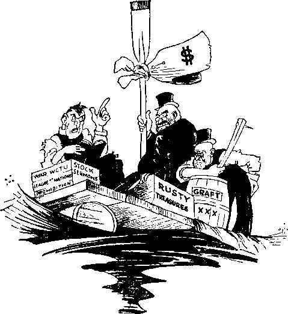

A JOURNAL OF FACT HOPE AND COURAGE
IIIIIIIIIIIIHIIIIIIIIillllllllllllllllllllllllllllllllltlllllllllllllll
in this issue
JEHOVAH GOD
AND AMERICAN GOVERNMENT
CAN
THE AMERICAN GOVERNMENT ENDURE?
PROCLAIMING THE KINGDOM THIS CHANGING WORLD RESPONSES TO ADDRESS BUT ONE GOVERNMENT
iimiiiiiiiiiiiiiiiiiiiiiiiiiiiiiiiiiiiiiimiiiiiiiiiiiiinmiiiiiiiii
every other
WEDNESDAY
five cents a copy one dollar a year Canada & Foreign 1.25
Vol. XIII - No. 335
July 20, 1932
C ONTE NTS
LABOR AND ECONOMICS
Municipal Ownership at Bloomfield
Poland Divides with Poor . . 658
Twenty Starve in New Turk . . 659
Turning Factories over to
SOCIAL AND EDUCATIONAL
Photographs from Family Album 656
Plain Talk by Kenneth Collins 656
This Changing Worm) .... 658
Canaan Asked Help from Egypt 658
National Non-Military Service . 659
British Prudence and Restraint . 659
Languages at Armament Conference
Murder Rates in U. S. and Elsewhere
French Order Fifty Million Gas Masks
Will Be but One Government . 669
MANUFACTURING AND MINING
Radium at Great Bear Lake . . 660
FINANCE—COMMERCE—TRANSPORTATION
Four Biggest Banks.....658
Barter in Alberta......658
Yankee Dollars in Canada . . . 660 Gold Has Had Its Day .... 660
POLITICAL—DOMESTIC AND FOREIGN
Hints of a Dictatorship .... 645
Controlling Small Business 'Jan 646 Where Power Resides .... 646 Coming Events at Washington . 646 “Cry to Save the Government” 646 “A Gangster-Ridden Country” . 646 Facing Complete Disaster . . . 646 Herbert Hoover on War Policies 646
How Spain Got Rid of Military 658 New Mexican Labor Law . . . 659
AGRICULTURE AND HUSBANDRY
Reforestation in New York State 658
SCIENCE AND INVENTION
Railroad Watchmen Must Go . . 658
TRAVEL AND MISCELLANY
Great Drought in Brazil . . . 660
Their Bodies Blown to Smithereens
RELIGION AND PHILOSOPHY
Jehovah God and the American Government
Can the American Government Endure ?
Proclaiming the Kingdom at Washington
Published every other Wednesday at 117 Adams Street, Brooklyn, N. Y., U. S. A., by WOODWORTH, KNORR & MARTIN
Copartners and Proprietors Address: 117 Adams Street, Brooklyn, N. T., U. S. A. CLAYTON J. WOODWORTH.. Editor ROBERT J. MARTIN.. Business Manager NATHAN H. KNORR.. Secretary and Treasurer
Five Cents a Copy—$1.00 a Yeab Make Remittances to THE GOLDEN AGE Notice to Subscribers: For your own safety, remit by postal or express money order. We do not, as a rule, send acknowledgment of a renewal oT a new subscription. Renewal blank (carrying notice of expiration) is sent with the journal one month before the subscription expires. Change of address, when requested, may be expected to appear on address label within one month.
Published also in Esperanto, Finnish, German, Japanese, Norwegian, Polish, Swedish.
Offices in Otheb Countries
British ............ 34 Craven Terrace. London, W. 2. England
Canadian...........40 Irwin Avenue, Toronto 5, Ontario, Canada
Australasian......7 Beresford Rd., Strathfield, N. S. W., Australia
South African..........6 Lelie Street, Cape Town, South Africa
Entered as second-class matter at Brooklyn, N. X., under the Act of March 3, 1879.
Volume XIII Brooklyn, N. Y., Wednesday, July 20, 1932 Number 335
IT WAS a tense moment, a situation unlike any other in history, when Judge Rutherford stepped to the microphone on the morning of June 26, 1932, to answer the question “Can the American Government Endure?”
All intelligent persons of mature years know that the American Government as it was in the days of our fathers has ceased to exist. No one would be willing to say that what is functioning at Washington is “a government of the people, by the people, for the people”.
It cannot be said that there is liberty in a land where 8,000,000 of the citizens are without employment and therefore without the means of life. In a natural paradise where there is too much of everything, too much coal, too much cotton, too much food, Big Business, by its unwisdom, has in a few short years made an end of liberty and brought serfdom to millions.
And it is unrepentant and unchastened in the face of the greatest follies ever laid at the door of any governing group. It now wants even the nominal restraints of the present laid aside and all power-placed in its hands, regardless of law, reason or consequences.
The Vanity Fair magazine, in its June (1932) issue, contains an article by its editors entitled, “Wanted: a Dictator!” It is a magazine that circulates among the wealthy and makes its appeal to that class. The concluding paragraph in that article is as follows:
In this country, Congress has failed utterly to meet the test. Representative government has collapsed before the clamor of special interests. The American people can give no mandate before November, and the situation is critical. We must declare an immediate truce on party politics and create, legally or illegally, an emergency organization, if the executive power is to rescue the national finances and the national credit from the nerveless hands of a lobby-ridden Congress. The alternative is chaos.
This Big Business crowd that has taken the government and the wealth of the nation out of the hands of the people and put it in their own hands, and that now brazenly proposes a dictatorship to make its rule absolute, is exposed by Judge Rutherford in what is believed by his friends to be the strongest address he ever made. It is featured in this issue.
As Judge Rutherford gave this address official Washington, guiltily conscious of this dictatorship conspiracy in process of forming, was and is terrified by the presence within its gates of 45,000 World War veterans who have come, so they say, to stay until they get their adjusted compensation, and more are on the way. They want $2,400,000,000, so they say, and want it now.
As he stepped to the microphone there were many officials in Washington and elsewhere who no doubt hoped that the judge would call for a revolution, so that they could release against him and against these veterans all the powers which have been reserved for just such an occasion. How astonished they must have been when they heard him give counsel in exactly the opposite direction! Judge Rutherford’s only appeal is to the Word of Jehovah God.
But what Judge Rutherford had to say to official Washington was of a great deal more consequence to them than if he had called for a revolution and had gained the objective, for in recent years there have been revolutions in many lands, and counter-revolutions. These are events of minor importance. The adverse judgment of Almighty God against any institution of man means its final and complete annihilation.
And that is the message Judge Rutherford had to give. It seemed like the inaugural address of the New Government, the setting aside of the old and the proclamation of the new. It was delivered under circumstances befitting the dignity of earth's new King. Forty selected radio stations from Maine to Texas carried the message to millions.
Headquarters were opened at 1603 Massachusetts Avenue NW., Washington, D.C., in the
heart of the embassy district, a proper place for the work in hand. Special courtesies were shown to the president of the United States, the members of his cabinet, United States senators and representatives. When incumbents of office will be leaving shortly, the least one can do is to be courteous to them, and kind. Even an executioner need not be rude.
At first there was some confusion on the part of Washington's officials, as would be natural Under the circumstances. In one instance a navy official demanded that the work of preparation for the broadcast be stopped and the Society’s representative come to see him immediately. When inquiry was made as to who was talking he replied, “The Government”; and not until the second inquiry, “What government?” he did not seem to know that there is any other government than that of the United States. He was informed of Jehovah’s government, and told that ‘he could find its representatives at any time; meantime, we stand on our rights, and on our instructions from Jehovah God’.
In any business enterprise, when the board of directors decides to oust the old administration and put in one entirely new, the old one always hates to go, but go it must. Whether its record is good or bad, it must go. What it has done or not done is merely a matter of history. No attention is paid to its protests of what it ‘will do if allowed to remain’. It is like that with the government at Washington, and with all the governments of earth. They must go; their time is up; their fate is sealed.
Illegal clamorings for a dictatorship, such as proposed by Owen D. Young, chairman of the board of directors of the General Electric Company, and by the editors of Vanity Fair, will do no good. Nor, on the other hand, is it necessary to lock up the men who have advocated these illegalities. Jehovah God has a better way, and His way will succeed.
Even the most elementary student of the Scriptures knows that a time conies when God's kingdom, ‘the stone cut out of the mountain without hands,’ comes into power in the earth, and while previous governments are still functioning. The statement is that this “kingdom which shall never be destroyed’’ “shall break in pieces and consume all these kingdoms, and it shall stand for ever”, (Daniel 2:44,45) That time has come.
It is no disgrace to be living at the time when God’s kingdom comes into power. On the other hand, it is a great privilege and a great blessing to those who are willing to submit to the sway of the new King. But whether men choose to submit willingly or not, submit they must. If they submit willingly they may live; if they submit unwillingly they die; and Jehovah God has pronounced the decree, not in a corner, but publicly.
On June 26, 1932, He used Judge Rutherford to declare His righteous judgment on the government at Washington, but not that government alone. Britain must go; it may not forever keep 50,000 political prisoners in the. vermin-infested jails of India; nor may it forever betray the people of Egypt and of those to whom Balfour gave his word of honor.
France must go; it may not forever maintain its Devil's Island off the coast of Guinea, or hold the world in terror of its airplane squadrons and savage soldiers from Africa. Italy must go; Mussolini may not forever ridicule the lovers of liberty and hold in the Liparis, under conditions worse than death, the few in his realm that dare to use their reasoning faculties. The black shirts are the skulls and crossbones of “Christendom”.
Poland must go; not for always may it, in its prisons, assault the helpless, beat them black and blue, and compel them to take their food from the same containers in which they ease themselves. Germany must go; God will not hold her guiltless for the treatment accorded His witnesses within her borders. And she still nourishes militarism in her heart.
Hungary must go; its treatment of its prisoners has been almost as bad as that of Poland. Russia must go; the entire land is one vast prison from which, if one attempts to escape, his life is the forfeit. And who would wish to save the government of Japan, or any other of the governments that have filled the world with terror and with sorrow?
In the face of what has happened and what is happening at Geneva, what interest can God or man have in any of these institutions that are backed up by battleships, Big Berthas, machine guns, flame throwers, poison gas, chaplains and diplomats, except to wish their speedy end, and the establishment of the better order for which Jesus taught us to pray, ‘Thy Kingdom come; thy will be done on earth as it is in heaven?’
It is of that Kingdom, not a dream, but an actuality, that Judge Rutherford, as the mouthpiece of Jehovah God, spoke so plainly, so forcefully and so kindly, June 26, 1932. Will the rulers hear and live, or will they refuse to hear, and receive destruction at the hands of Almighty God? It matters not; God will have His way and will grant deliverance to all whose hearts turn toward Him in this fateful hour. In the end such will say, ‘Lo, this is our God; we have waited for Him, and He will save us.’
‘'And it shall come to pass in the last days, that the mountain of Jehovah’s house shall be established in the top of the mountains, and shall be exalted above the hills; and all nations shall flow unto it. And many people shall go and say, Come ye, and let us go up to the mountain of Jehovah, to the house of the God of Jacob: and he will teach us of his ways, and we will walk in his paths: for out of Zion shall go forth the law, and the word of Jehovah from Jerusalem. And he shall judge among the nations, and shall rebuke many people; and they shall beat their swords into plowshares, and their spears into pruninghooks: nation shall not lift up sword against nation, neither shall they learn war any more. 0 house of Jacob, come ye, and let us walk in the light of Jehovah.” (Isaiah 2:2-5) Judge Rutherford’s address June 26, 1932, is an invitation to all the world to come into this Kingdom. They may come or be destroyed, and the decision is with them. ‘'Multitudes, multitudes in the valley of decision!” Each must decide for himself. None may decide for another.
All our readers will be interested to know of the circumstances attending the announcement and delivery of this climacteric proclamation. What was done at Washington 1 What were some of the outstanding incidents? Was the work done openly and courageously, or stealthily and furtively? Read the report of Anton Koerber to the president of the Society. It speaks for' itself. (See page 654.)
A unique feature of publicity for the broadcast was that one-minute announcements were made frequently from two hundred stations during three days preceding the address date. Each station giving the announcements made mention of one or more stations that could be heard in that certain locality during the chain hour. And there was other publicity.
After the broadcast Judge Rutherford was deluged with telegrams and subsequently with thousands of letters of appreciation from all over the United States and Canada east of the Rocky mountains. Believing that many of our readers will appreciate seeing some of these, we reproduce a few of them elsewhere in this issue. The address itself begins on page 647.
(Confirmations, in the day’s news, of the aecuiaey of Judge Rutherford's findings in the epoch-making address reported in full, beginning on page 647.)
HAVING ruined the country Big Business is now clamoring for a dictator and has its speakers out getting things lined up with that in view. In an address before the Rotary club of Fort Myers, Fla., Rev. O. T. Anderson quoted a statement by Owen D. Young pointing to what he considers an existing necessity for a dictator in America, and himself added: “What we have is an impasse—or a vicious circle. The manufacturer or producer is in no mood to open his mills for fear he will have no market for his products. But he can have no market until the buying public gets a job and has money with which to buy. If a dictator should step in tomorrow and order every wheel of industry to start turning next Monday and every unemployed man to report for work at a living wage (I do not say at labor union wages) we should be well out of this impasse inside of 60 days.” How perfectly this backs up what Judge Rutherford said in his great speech over the hookup Sunday morning, June 26, on the theme, “Can the American Government Endure ?”
PLAN is afoot to control the purchases of the small business man, and make him pay interest on everything from the start. This plan, which, if adopted, will be a financial dictatorship, is said to have the approval of the heads of General Motors, Standard Oil, Bethlehem Steel, General Electric and U. S. Steel. Hints that a virtual dictatorship would soon be in effect in America have frequently come from Washington of late. It is held that the president needs an advisory council to assist him, a supergovernment.
THE New York American says, comically but truthfully: “The early Americans, throwing off the power of the English kings, thought they could arrange a plan under which power would be located nowhere in particular. They were mistaken. Power always goes somewhere, and here it has gone to organized finance. The president of the United States can take it away and exercise it himself whenever he chooses.”
IF COMING events cast their shadows before, one instinctively wonders what it means to have an army of several thousand ex-soldiers permanently encamped at the capital, waiting, so they say, until they get their bonus money. The police say they do not think it wise for them to handle them roughly, the men say they won't go home until they get what is coming to them, and it is doubtful if the regular army would fire on them even if they were given the command.
Edward F. McGrady, legislative representative of the American Federation of Labor, testifying on relief legislation before the Senate Manufactures Committee, made the statement that “the president and Congress must realize that conditions are not going to get better, but that they will get worse”; and said that if relief is not afforded the unemployed next winter “it will be a cry to save the government”. Meantime, the railroads have been helped up to as high as $27,500,000 at one crack.
Wickes Wamboldt, editorial writer of The Morning World, lets us down a peg when he says:
We are a gangster-ridden country. There is no doubt about that. We can pooh-pooh the idea or resent it all we please—we are gangster-ridden, gangster-controlled. There are all types of gangsters. Some of them would become really excited should you call them gangsters; they do not consider themselves gangsters. Some of them occupy high places in churches, pass contribution plates, teach Sunday school classes, fill offices in chambers of commerce and other trade bodies; some have titles of “Honorable”; yet they are gangsters. Any man is a gangster who is part of an organized group deliberately and wilfully exploiting the people.
TN A LETTER to members of Congress urging immediate creation of a National Economic Planning Council to try to do something to break the present depression Mayor Hallstrom, of Rockford, Illinois, says:
Wc are facing complete disaster, which, in my opinion, can only be averted by prompt action by Congress. If this is not done we will have nothing left but a wreck of our cities and farms. The time is at hand when Congress must decide whether the almighty dollar shall continue to be supreme and the rights of humans to be totally ignored.
TTrilEN Herbert Hoover was secretary of ’ ’ commerce his recommendations on war policies were for a stringent dictatorship, as follows:
A blanket authority to the president to fix prices, wages, transportation charges, compensation, embargoes on imports and exports, to exercise the war powers of requisition under circumstances that 75 percent of the estimated value may be paid and the balance determined by the courts in case of disagreement, suspend habeas corpus, and generally complete an absolute authority in all ramifications over the whole civilian life with the provision that he may delegate these authorities.
These are the words of a man that is at heart a tyrant. Where do they convey any interest in the suffering people?
TN CHICAGO a gangster threatened a judge and prosecuting attorney with death by machine gun unless they dismissed a charge of bank robbery which they had against him, and the judge signed the order dismissing the case. But hardly a week goes by but that some “brave” Jersey policeman, in Bergenfield or Westfield, or elsewhere, arrests some mild, defenseless Christian man or woman, one of Jehovah's witnesses, for going from door to door, comforting the people in the Scriptures and seeking to place in their hands the message of God’s kingdom as the only hope for the world. And when it comes to the “brave” judge he boldly repudiates the law of God, the Constitution of the United States and the Constitution of the State of New Jersey, and sings out, “Ten dollars or ten days.” Is it any wonder ruin is at the door?
[Chain Broadcast from New York June 26, 1932, by Judge Rutherford]
FOR more than a hundred years America has stood in the very foremost rank of the governments of the earth. In natural resources America is today the richest country under the sun. The United States and Britain constitute the two pillars of the great seventh world power and which power is described in divine prophecy as the double or twofold government. Both nations claim to be Christian, and they form the chief part of the realm called ‘‘Christendom-’, but, in fact, Satan is their invisible ruler and god.
The founders of the American nation desired greater freedom than they possessed. That they might be free and independent of cruel and oppressive rulers they fled from Europe and established the American republic, to which nation men have long pointed with pride. When the nation was young many of her statesmen were patriots, because they loved their fellow men and honestly and valiantly contended for a just government. Today there is no true patriotism among the rulers of the nation. It is now impossible for the people to elect men to public office and to expect them to enact just laws and to administer the affairs of the government for the general welfare.
The three visible elements of men that rule the nation are, to wit, the commercial, the political, and the religious, and of these three the commercial is the most powerful. Among the earlier statesmen of America there were some God-fearing men who foresaw the advance of a mighty and selfish power and gave warning that the greedy would some day destroy the liberties of the people. That warning was unheeded, and the selfish, commercial element, which is otherwise called “Big Business”, has stealthily and constantly moved forward to its goal. With grasping arms like the tentacles of a mighty octopus it has laid hold upon practically all of the visible wealth of the nation. At the same time the men who by laborious efforts have developed the country and produced the wealth of the land have been unjustly treated and robbed, and today they are crying for bread, and that in a land of boundless plenty. Many Americans in sorrowful tones are now asking the question: “Can the nation of America long endure while such unjust conditions exist
Big Business has no regard for the rights of the common people. The Civil War of 1863 was fomented and carried forward for the purpose of creating a condition by which Big Business could obtain a strangle hold upon the nation. To free the land from the traffic of human flesh and blood was the ostensible reason for that war, but the real reason was to enable a selfish company to control the finances and all the business interests of the nation. In 1917 Big Business, for ultrasellish reasons, needlessly and wantonly forced the American nation into the World War, which resulted in the greatly increased wealth and power of a few men and made serfs and paupers of many millions of people.
Today Big Business owns practically everything visible. By the manipulation of the finances of the nation Big Business has acquired title to almost all of the real estate, while hundreds of thousands of honest toilers are losing their homes and their land. A few ultrarich men fix the prices of the food produced by the farmers, and which food products are reaped down by laborers, and by reason thereof the farmers are robbed and the laborers are caused to starve, and that within the borders of the richest nation of the world.
Big Business owns the ships that ply the seas, and that fly through the air. It owns and controls the railways and other ways and means of transportation. Big Business has acquired the preferred securities of the public carrier corporations, while some of the common people hold the less desirable stocks and securities. When the railways were recently pressed for money to pay the interest on their preferred securities Big Business caused the American government to advance a hundred million dollars to the banks upon the pretext of helping the banks to thaw out their frozen assets and to stimulate business immediately, but instead of so using that money Big Business immediately absorbed the entire hundred million and applied it to the payment of interest on the preferred securities which it held.
Big Business, which is composed of a very few men, owns and controls the telegraph and telephone lines, the radio, the electric and power lines, and it owns and controls the mines that produce the fuel and the building material which all the people are compelled to use. It owns and controls the banks and most of the money that is in them. It is in possession of the greater portion of the gold that rightfully belongs to
the government. The factories and the great mercantile establishments are owned and controlled by the same selfish interest.
Big Business has in its employ the most astute lawyers of the nation, who write the contracts always in the interest of their clients, and the common people must take the ragged end. Every branch of the government is contaminated and improperly influenced by Big Business. It controls the two major political parties of America and names and elects at will the public men to office who will best serve its selfish interests. Big Business controls the army and the navy, the guns and the ammunition, and the police power of the nation.
Practically all of the business corporations of America are owned or controlled by Big Business. The employees of these mighty corporations have a hook in their nose, so to speak, and they dare not call themselves their own. They must obey the selfish men who are the mighty lords of finance or else lose their jobs. They need their salaries to feed and clothe themselves and their families; hence they are at the mercy of Big Business and are therefore serfs.
Big Business either directly or indirectly owns or controls almost all of the newspapers and magazines of America, and which agencies serve as propagandists for Big Business and their immediate political and religious allies. The same selfish interests own and control the professional clergymen, and these men make merchandise of the Word of God in order to keep the people in ignorance and in subjection to the ruling powers. Thus it is plainly seen that the power of the government is centralized in the hands of a very few.
In times past statesmen have warned the people of the danger that would result from the centralization of power in the hands of a few men. While the people have heard this warning, and many of them have sensed the advancing danger, they have been helpless to prevent what has come to pass. Today the common people are bound hand and foot. In 1917 the predatory element that rules the nation created the slogan, “The wrar will make the world safe for democracy,” and then caused its propaganda press and its hypocritical clergymen to sound this false slogan throughout the land. Now after fourteen years democracy has disappeared from the earth. There is at this very time a concerted movement by those few men who control the commerce of the land to have America ruled by a dictator, which means the setting aside of all constitutional law and the putting into force such orders as the dictator may deem necessary. The public press has been instructed to diplomatically educate the people as to the necessity of a dictator before that step is actually taken and the dictatorial power disclosed. You have observed recently in the metropolitan press statements couched in guarded phrase advocating a dictator in America to control the affairs of the nation. From one of the well known magazines, dated June 25, 1932, I quote these words:
What could be done by a dictator with powers of a military nature? He would first make every possible effort to increase the confidence of men of affairs in the future of the country, to make business men everywhere realize that the government intended to encourage, assist, and protect them in every possible effort they might make.
This is a brazen statement made in the interest of the few and against the common welfare of the many. Big Business maintains paid lobbyists at Washington, which lobbyists conduct also a bureau of information for the special benefit of their employers. Each week a letter goes from that bureau of information to the executive heads of Big Business corporations. From one of these communications, dated May 14 last, I quote the following:
It is beginning to be apparent that some substitute for a coalition government will have to be formed to handle the situation after adjournment of Congress. . . . There are several plans, but one revolves about the idea of assembling in Washington, or subject to quick call, a group of a dozen or more men. . . . Dictatorship, which is being advocated more from week to week, would be avoided, but some of the practical merits of dictatorship would be obtained. At least this is the hope behind the idea, which is an adaptation of the set-up represented by the war-time Council of National Defense. . . . One practical objection is that the public might be-unduly alarmed by implications in the summoning of a council of advisers. . . . We have reason for believing the plan will materialize, and we advise you [executive business heads] in advance to consider it a good sign.
The information is provided for only corporation executives, and not intended for publication. These secret communications disclose in advance the action that Congress will take, what bills it will pass, and what it will not pass; and by watching the public press it is seen that these predictions come true.. This is one of the evidences that men elected to public office represent the predatory interests and not the common people. This and other facts show that the rulers are greatly perplexed and proceeding with much fear.
I am not taking sides in politics. I am merely calling attention to the facts, that I may in a moment cite Jehovah God’s prophecy applying at this very hour and which discloses the cause of the present trouble and what is the only possible remedy. In the language of the second Psalm of the Bible I ask the powers at Washington to give heed to the Word of Jehovah God and be wise. L ike wise I ask the people to hear and give consideration to what the Word of God has to say on this matter, because under the rulership of a dictator the opportunity to use the radio to tell you of the great truths of God's Word, which are now vital to all, may cease for a time.
In recent months Jehovah’s witnesses by radio and by calling at the homes of the people have repeatedly directed attention to the Bible testimony which shows that Jehovah God foretold the present distress and perplexity that is now upon the world, and the cause, and what will be the result. Their only purpose in so doing has been and is to inform the people for their own well being, in obedience to Jehovah’s command. (Isa. 43: 9-12; 6:1-11) Their efforts to thus inform the people of the truth, which is vital to be understood at this time, have been bitterly opposed by the hired clergymen, who have also enlisted the cooperation of the police power to keep the people in ignorance. Now as I have opportunity, I plead with the rulers and with the people to hear the voice of Jehovah God as set down in the Bible centuries ago, foretelling these conditions and pointing out the way of escape. Whether you do take heed or not, the responsibility is yours.
Well do you know that fear has laid hold upon almost everyone. You see this manifested by government officials, bank officials and employees, by business men and farmers, by professional politicians, clergymen and the common people. Why is there such great fear and perplexity amongst the rulers, and distress amongst the people everywhere? Jehovah God’s Word at Luke, chapter twenty-one, states that this very time of crisis would come upon the world, and that when it arrived there would be “upon the earth distress of nations, with perplexity; . . . men's hearts failing them for fear and for looking after those things which are coming on the earth: for the powers of heaven shall be shaken’’. “The powers of heaven” means Satan’s invisible organization, the members of which know the great crisis is here. What is the cause of this fear and perplexity, and which the public press designates “lack of confidence” ? The Word of Jehovah God answers the question in plain phrase. Then why not let the people know what that answer is ? Because Satan the invisible ruler of this wicked world wishes to keep the people in ignorance of and away from Jehovah, and to do this Jehovah’s witnesses are put in jail.
Men of Big Business and their “strong-arm squad” are reprehensible before God for hindering the witnesses of Jehovah in telling the people the truth, but the clergymen are far more reprehensible and responsible, because these “gentlemen of the cloth” have held themselves out as teachers of the Bible, thereby misleading the people, and have refused to teach the people the Bible themselves, and they oppose others who do teach it. Why then has this terrible condition of distress and perplexity come upon the world at this time, including the fair land of America? Jehovah’s Word at Revelation, chapter twelve, answers: “Woe to the inhabiters of the earth, and of the sea! for the devil is come down unto you, having great wrath, because he knoweth that he hath but a short time.” Satan’s world ended in 1914, that point being marked by the beginning of the World War. Satan, as Jehovah had foretold, was then cast out of the heaven, and from that time forward it is but a short time until the final destruction of his organization, and until the full and complete establishment of Jehovah's government of right-eousess. Never was there a truth so important as this for the people to know and to learn now.
For many centuries Satan has been the invisible ruler of this world. He has blinded men to the truth and has subtly influenced others to do his bidding. Satan is the author and organizer of the cruel and oppressive commercial Big Business system that rules the world. He has used commerce, politics and religion that he might get complete control of the human race and defame the name and word of Jehovah God. For this reason, it is written in the Bible (1 John 5:19), ‘The whole world is now under the wicked one.’ It is also stated (2 Cor. 4:4) that Satan is the god or invisible ruler of this world, and the one who blinds the people to the truth. He uses various instruments to accomplish this purpose. Satan, knowing that the time approaches when he must make his last stand, is now desperately trying to stampede every creature into his own camp and into a position against Jehovah and His kingdom. Within a short time Jehovah God will destroy the Devil and his entire organization.
But why did not God destroy Satan the Devil long ago, and thus prevent so much wickedness in the earth ? Bear with me, please, while I give the Scriptural answer. When Satan beheld the perfect man and woman at Eden, and knew that they were endowed with power to multiply and fill the eqrth, commerce had its birth in his selfish mind. He saw that in the future, with the human race in his power, he could build a mighty machine of commerce, politics and false religion, and thereby gain control of the people and defame the name of Jehovah God and make himself, Satan, the most important one. For this reason he challenged Jehovah God to put on earth men that would remain true to Him under adverse conditions. Had Jehovah refused this challenge and immediately destroyed Satan there would not have been an opportunity afforded to prove to all creation that Jehovah God is the Supreme One, that He is the Giver of life and all other blessings, and that His name is above all and worthy of praise. Jehovah accepted the challenge and permitted Satan to proceed in his effort to prove his boast. At the same time Jehovah informed Satan and man that when the due time should arrive Jehovah God will destrov Satan and all of his works. (Gen. 3:15-17; Heb. 2:14; 1 John 3:8; see Light, Book Two) Satan’s first world power was commercial and military Egypt. Jehovah sent His chosen people the Israelites to sojourn in that land. The Egyptian government oppressed God's people. In due time and after full warning to the Egyptian rulers Jehovah delivered His people from that land of oppression and destroyed the Egyptian rulers. The Scriptures plainly point out that such was an illustration of what Jehovah God will shortly do to Satan and his entire organization that rules the world. Pharaoh the king of Egypt pictured Satan the Devil, and the Egyptian nation pictured or foreshadowed the present nations of the world; while the Israelites pictured the order-loving people who desire to be-on the side of God and righteousness. Now in the language of the Scriptures I answer the question specifically as to why Jehovah God has permitted Satan and his wicked workers to exist for such a long period of time, and which answer God caused Moses to write, at Exodus 9:1G (Leese r), to wit: “But for this cause have I allowed thee to remain, in order to show thee my power; and in order that they may proclaim my name throughout all the earth.” To for ever settle the question of supremacy Jehovah has permitted Satan to go on in wickedness until due time to destroy him and his wicked organization and thus prove that Jehovah is the supreme and eternal God. That time of crisis has now arrived, and Jehovah’s witnesses are proclaiming his name throughout the earth.
Jehovah is the Creator of heaven and earth and the Giver of life. All His ways are just and righteous, and no one can enjoy the blessings of eternal life and happiness except at the hands of Jehovah. The name of Jehovah God is most important of all. His name has for centuries been defamed. The time has come to vindicate His name, and to place in the minds of the people the proper understanding and appreciation of His name. The defamation of God’s name has been brought about by Satan and his great commercial organization, aided and abetted by the political power, acting in conjunction with the false and hypocritical religious leaders who falsely charge Jehovah God with responsibility for human suffering. Satan’s organization oppresses the people, and at the same time the preachers or clergymen tell the people that the nation of America and other like nations rule by divine right, are Christian nations, and hence exercise power in harmony with the will of God. For this, amongst other reasons, the clergy, while claiming to represent God, in fact represent the Devil and his organization. In order that the people might hear the truth and determine this matter for themselves, recently I challenged the combined clergy of America to select their best man to debate this question by radio. Charged with misrepresenting God and serving Satan these gentlemen should either come forward and prove the falsity of the charge or. failing in that, should cease to hold themselves out as teachers of the Word of God. Jehovah foretold the outcome of such a challenge and the attitude that would be assumed by the preachers, when He caused His prophet Jeremiah to write, at chapter fifty-one, verse thirty: “The mighty men of Babylon [Satan's organization] have forborn to fight, they have remained in their holds: their might hath failed."’ Let the people take note of this fact.
The greatest crisis of the ages is now upon the world, and this includes the American government. The power of Satan's earthly government is now centralized in the hands of a few. Seeing that a great crisis is at hand, even these rulers are in great fear and perplexity; hence they evolve and announce many schemes. But no such schemes can pull the nation out of the present dilemma. The rulers have been duly informed and duly warned that Jehovah God's kingdom is here. They have refused to give heed. They disregard the Word of God and go on with their imperfect schemes, and will continue to try one after another, all of which shall fail. I venture the opinion that before the end of the year the American government will be ruled by a dictator, aided by a company of advisers that are selected and directed by the chiefs of Big Business. Such will be a military rule and one which the people will be compelled to submit to.
In 1917 millions of young men were forced into the military ranks at the instance of Big Business. The lifeblood of more than a hundred thousand of these was spilled upon the soil of France in violation of Jehovah’s everlasting covenant. Other thousands, returning to America, found themselves without a job and with no means of support for themselves and their families. And now after fourteen years thousands of those war veterans march to Washington and beg the government to feed them and their starving children. They ask for bread and receive a stone; they petition for meat and receive a deadly serpent. Many are now’ asking: “Can the American government long endure under such conditions ?”
Would a revolution relieve the people and pull the nation out of its present dilemma ? I answer most emphatically, No. There is no man in America that could lead successfully a revolution. To undertake it would be worse than folly. Satan has seen to it that the power of the nation is centralized in Big Business and its allies. The army and the navy and the “strong-arm squad” will do the bidding of Big Business, and the people are powerless before them. A revolution ■would be a dismal failure and would accomplish no good results. Let thoughtful people who believe in what is right refrain from advocating revolution and abstain from all violence. No person who believes and serves Jehovah God will resort to violence. This is Jehovah’s fight.—2 Chron. 20:15; 2 Cor. 10: 4.
Shall the cruel and oppressive commercial power selfishly and wantonly continue to rule without limit ? What shall the people do for relief? I strongly appeal to you to be calm and learn what Jehovah God has provided for relief and deliverance. By His Word the great Jehovah now speaks to the rich and oppressive ones who rule behind the throne of visible power, and says to them, as recorded in James 5: 1,2: “Go to now, ye rich men, weep and howl for your miseries that shall come upon you. Your riches are corrupted, and your garments are moth-eaten.” How true is that statement of the Lord’s Word applied at this day. With all their wealth they are in fear and in perplexity, and they weep and howl because of the miseries that have now come upon them. They have the money, but they do not know what to do with it. Further addressing them Jehovah says (Jas. 5:3): “Your gold and silver is cankered; and the rust of them shall be a witness against you, and shall eat your flesh as it were fire. Ye have heaped treasure together for the last days.” Heretofore I have pointed out from the Bible that we are now in the last days of Satan’s rule and that God’s kingdom is at hand. The millions of people who once produced the wealth that others now have, and who are now’ without employment and without money, are crying for help. They are not crying to God, because the agents of Satan have kept them blind concerning the truth of God. They are crying because they have been robbed and defrauded, and their burdens are unbearable. Yet Jehovah hears their cries, even as He heard the cries of the oppressed in Egypt, and now further addressing the oppressors He says (Jas. 5:4, 5): “Behold, the hire of the labourers who have reaped down your fields, which is of you kept back by fraud, crieth: and the cries of them which have reaped [and have fought your battles] are entered into the ears of the Lord of [Battle]. Ye have lived in pleasure on the earth, and been Avanton; ye have nourished your hearts, as in a day of slaughter.”
The invisible and visible armies of Satan and of Jehovah God are assembled now at Armageddon. Satan’s chief field marshal is called “Gog” and is the one who commands the host of devils invisible and the powerful visible organization that is on the earth and under the hand of Satan. Jehovah's chief field marshal is Christ Jesus, who leads and will lead the fight against the enemy. He is supported by legions of glorious spirit creatures that are invisible to man; while on earth there is just a little handful of men whom He uses, not to fight with carnal weapons, but to bear testimony and inform the people of what is coming and to point them to Jehovah God’s kingdom that will be their relief. Already Satan and his wicked forces under Gog, both invisible and visible, have formed a conspiracy and have begun the committing of overt acts against the faithful witnesses of Jehovah. The day rapidly approaches for the great conflict, and Jehovah God says to the enemy forces, as stated in the prophecy of Ezekiel: ‘I am against you and all your organization, and I will destroy you.’ (Chapters 38 and 39; see Vindication, Book Two) Jehovah’s name shall be vindicated and all creation shall know that He is The God. Hence Satan and his entire organization must fall, and that includes the American government.
The people who are oppressed are powerless to deliver themselves, and they continue to cry. Some have assumed leadership amongst the people, and these advocate various schemes of relief, amongst which are communism, revolution and other deeds of violence. Their homes have been swept away from them. They have been robbed of their earnings. They are without employment and they see their children starving, and they have become desperate. Jehovah God by His prophet now7 addresses them and tells them to stand still and watch what He shall do. (2 Chron. 20:15) He says, at Zephaniah 3:8: “Wait ye upon me, saith the Lord, until the day that I rise up to the prey; for my determination is to gather the nations, that I may assemble the kingdoms, to pour upon them mine indignation, even all my fierce anger: for all the earth shall be devoured with the fire of my jealousy.” Jehovah is the God of Battle, and, the time having arrived for the vindication of His name, He will fight the battle of Armageddon for His own name’s sake; and it will result in the complete destruction of oppressive powers and the deliverance of the people. There is no need to seek for or look for any other way out of the dilemma, because there is none other. Those who love God would not wish to find any other, because they know what Jehovah does is done right and in the interest of righteousness.
For the information of those who love God and w’ho would know Him and His righteous way, He has caused to be recorded in the Bible illustrations of the great and final battle now approaching and during which the nations of this earth shall fall. The eighty-third Psalm describes the enemy’s organization under Satan led into action by his chief officer Gog. The psalmist then, as Jehovah’s faithful representative, says (Psalm 83:2,3,5,9): “For, lo, thine enemies make a tumult: and they that hate thee have lifted up the head. They have taken crafty counsel against thy people, and consulted against thy hidden ones. For they have consulted together with one consent: they are confederate against thee. Do unto them as unto the Midian-ites; as to Sisera.” Satan’s organization is described here under the names of Midianites and Sisera; and concerning the battle in which Sisera was destroyed it is said, in Judges 5:20: “They fought from heaven; the stars in their courses fought against Sisera.” The “stars” picture the invisible army of Jehovah God, which army will do the destructive work at Armageddon, and against which Big Business and all military powers of earth can do no hurt. Christ Jesus, in Matthew, chapter twenty-four, describes that battle as the worst trouble that will have ever afflicted the world and that it shall be the last. That battle is near.
The responsibility of nations before God is in proportion to the light and favorable opportunities afforded those nations to learn righteousness and deal justly. America and Britain are the leading nations of the realm called “Christendom”. The light and favor of Jehovah has been greatest to them, and hence responsibility is far greater upon these than upon any other nations of the earth. There has been more hypocrisy practiced and more blood unrighteously shed in these nations than in any other under the sun. Why will Jehovah destroy these nations?
The Bible answers: Jerusalem was a type of “Christendom”. It was in Jerusalem that Jesus, the Son of Jehovah God, was foully murdered and His disciples persecuted to death. Jeru-
JCL. 20, 1932 Tfc AQE 653
salem was completely destroyed. During the World War it was the seventh world power that led in the persecution of the faithful followers of Christ Jesus. It is in America that Jehovah's witnesses are now cruelly persecuted because they insist upon informing the people of God’s kingdom, which is the only hope for human relief. This persecution of Jehovah's witnesses is led by the clergymen, the same class of men that persecuted Jesus to death. If Jesus were to walk into Washington today and mingle with the suffering veterans in their camp He would be denounced by the clergymen as a man of low’ civilization. It is this same class of clergymen and political lobbyists that recently adopted a resolution, which appears in the Washington Herald under date of June 10, 1932, declaring that Christ Jesus belongs to a low’er civilization.
The Scriptures use the v’ord ‘'inhabitants'’ as applying to the rulers who have ruled the earth as Satan’s representatives. In Isaiah (24:5,6) Jehovah says: “The earth also is defiled under the inhabitants [rulers] thereof, because they have transgressed the laws, changed the ordinance, broken the everlasting covenant. Therefore hath the curse devoured the earth, and they that dw’ell therein are desolate: therefore the inhabitants [rulers] of the earth are burned, and few’ men left.” That means that the present unrighteous rule of this earth shall cease by the hand of Jehovah; and the greatest trouble W’ill be upon “Christendom”, w’hich includes America.
This speech is not made to disturb the people, but to inform them that there is hope of complete relief in Jehovah’s provision. If you believe that the Bible is God’s Word, then study it in the light of present-day events. Send a card to Watch Tower, Brooklyn, N. Y., requesting a full text of this speech and you w’ill receive it free of charge, and it will enable you to better study the Bible. This speech is not made as a warning to the rulers. They have already received notice of the approaching w’orld storm, and instead of giving heed thereto they go on with their abortive schemes. Concerning this, Jehovah, at Psalm 82: 5, says: “They know’ not, neither will they understand: they walk on in darkness: all the foundations of the earth are out of course.”
But why do I state that complete relief will follow7 the downfall of “Christendom”, including the American government? I answer, Because Jehovah God says so. In Zephaniah 3: 8 He declares His purpose to destroy Satan’s organization, and then, in verse nine, says: “For then [after the destruction] will I turn to the people a pure language [of counsel and advice], that they may all call upon the name of the Lord, to serve him with one consent.” All shall then know that Jehovah is the Supreme God.
For centuries Satan has been the invisible ruler of the nations of the earth, and Satan is the greatest enemy of God and of man. Satan has caused the people and the rulers to be blinded to the truth. God has not heretofore interfered with his wicked w’ork, but now the time has come w’hen Jehovah will interfere and will destroy Satan and his organization and vindicate His name. The w’orld henceforth shall be ruled by His righteous Son Christ Jesus. That government shall be upon His shoulders, and of the peace and prosperity thereof there shall be no end. (Isa. 9:6, 7) Then the people will know the truth, and, as God’s Word declares, the people shall say: ‘Come, let us go up and put ourselves under the government of the Lord, and He w’ill teach us the right wav’; and then they w7ill cease from war and strife and dwell in peace for ever.—Isa. 2: 2-4.
Jehovah made this earth for man to live upon in peace and plenty, health and happiness; and under the reign of Christ, He declares, the earth shall yield her increase and God shall bless the people, and all in the earth shall know Him. (Ps. 67:7) Christ is the invisible Ruler of the new7 world, but He w’ill have on earth true and faithful men who will honestly and faithfully carry out His orders. Those men have already proven their faithful devotion to God. Some of them are named in the eleventh chapter of Hebrew’s; and in the forty-fifth Psalm the Lord declares they shall be the rulers in all the earth. In Isaiah 32:1 it is w’ritten: “Behold, a king shall reign in righteousness, and princes shall rule in [justice].” The duty and obligation laid upon Jehovah’s witnesses now on earth is to bring this information to the attention of the people. They are not seeking or expecting personal gain or the approval of men. They are jovfullv obeying the commandments of Jehovah God. ‘
From the Word of Jehovah I specifically answer the question “Can the American government endure?” And that answer is emphatically, No! The terrible suffering, distress and unrighteousness now’ prevailing in this land of plenty should be sufficient cause for sober-minded persons to consider the reason and the remedy therefor, and all of which information is clearly set forth in the Bible. Those who will escape and be brought through to safety in this approaching time of greater trouble will be those who heed His Word and who take their stand on the side of Jehovah, because He so states, in Zephaniah 2: 2, 3.
Jehovah’s witnesses are your friends because they bring to you the information of how you may receive complete relief. We should expect Satan and his agents to do everything possible to prevent this information from getting to you; and that is exactly what they are doing. For your own sake, and that you might know the way that leads to life, peace and happiness, I plead with you in this hour of great crisis to study the Word of God. All efforts put forth by men or earthly organizations of men to relieve the people must fail, and the great trouble upon the world must come, because Jehovah God has decreed it so. When the wicked, cruel and oppressive organization of Satan has ceased to exist, and when you see and experience the righteous government of the world under Christ, the Prince of Peace, and the blessings that flow from that just rule, you will forget the distress that you now have, and you will rejoice and give praise to Him who is the Giver of every good and perfect gift.
The American government has been weighed in the balance and found wanting. It cannot endure. Together with all other nations, it soon shall fall. Such fall will be in spite of everything Big Business, politicians and clergymen, the military and the “strong-arm squad”, and the Devil and all of his hosts can do to hold together the oppressive rule. It must and will fall because Jehovah God’s kingdom is here. Hasten nowT to take shelter under Jehovah’s kingdom.
Under the righteous rule of Jehovah’s kingdom you will enjoy the fruits of your labor. Your wives and your babies will be housed and fed, and you will dwell in peace and happiness and health upon the earth for evermore. (Mic. 4: 2-4) I bid you, therefore, to be calm, refrain from violence, trust in Jehovah God, and wait for the salvation and peace and endless joy that His kingdom will bring to the now suffering millions who are obedient to Him. The kingdom of God is solely your hope. Your greatest Friend is JEHOVAH GOD.
June 27, 1932 The President, Honorable J. F. Rutherford, 124 Columbia Heights, Brooklyn, New York.
Dear Brother Rutherford:
Jehovah has dealt bountifully with us, and every one who has had any part in the campaign here at Washington in preparation for the Lord's message over the air on June 2G is rejoicing. Following is a condensed report of some of the happenings in which I believe you will be most interested.
Ralph arrived with radio equipment Wednesday. Apparently we were blocked at everything we attempted, by the police, the government, and the Electric Power Company, but by the Lord’s grace all this was overruled in a wonderful manner, and by Friday we were broadcasting. The authorities attempted to interfere, but the veterans set several guards over the equipment and the police and power company did not have a chance.
That night Brigadier General Glassford, head of the police department (who had previously during the day sought to prevent us from putting up the equipment), issued orders not to let anyone go into the camp; and at the same time issued orders for the veterans to leave the camp, upon threat that they would not furnish any more food rations. The veterans said they would stay, and told the police to keep their hands off.
Friday night the Lord had an organization functioning here in preparation to serve notice of Jehovah's message on June 26 to every government official and employee in the ten governmental offices, as well as those in the Senate and House office buildings on Saturday morning. Exactly 300 of Jehovah’s witnesses went into action at 8:45 a.m., at which time the government employees and officials entered their offices. Arrangements were made and timed so that every man would have a certain portion of a building to cover.
Then the fireworks began. Jehovah's witnesses poured into the buildings and placed the notice before them before they knew what had happened. By ten o’clock, however, the alaim had spread by the officials to other buildings, and their guards and policemen were waiting for them. But every man went ahead and carried out the commands given, regardless. So while the guards were holding a few for the police the others finished the building. In some of the buildings it seems the officials had taken special precautions against such an attack on their building, and when Jehovah's witnesses boldly walked past the guards into their offices they jumped up and cried for the guard and police. Others ran through the corridors crying ‘•The place is taken, the place is taken; call the guards!” Finally some of the guards learned they were Jehovah's witnesses and quieted the people, while other guards were very abusive, denouncing Jehovah and all His organization.
A number of varied experiences were had which can be explained only in person. Might add that Ralph and I served the notice on ten members of the cabinet early in the morning, so that by the time they reached their offices the place was full of them.
As I look back over the scene now I am reminded of Joel 2: 9, which says, ‘They are coming through the doors; they are coming through the windows.’ A number were taken to the police station. Then the officials began to call me up, both police and governmental. Of course we just proceeded ahead, by the Lord's grace, advising the authorities this is Jehovah’s work and vital to the people’s welfare. Finally they gave up and let them all go who had been arrested. The police began to give us some special attention from this point on, but Jehovah’s witnesses went right ahead in the strength of the Lord.
All day Saturday we put out the radio notices, far into the night, about 200,000 in all. By Jehovah’s grace, on Sunday, His message was heard as clear as a bell. Every word was heard distinctly over the entire field of the veterans camp, which is at least a mile long. Ralph had things in good shape. We had spread the radio folders on Saturday afternoon in the camps also. There were five other camps scattered throughout the District with a small number of veterans. Most of these were encouraged to join the main camp, but the officials had a cordon of police guarding one of these camps of about 3,000, where the men were actually in a state of incarceration, to prevent them from joining the larger groups, but again, by the Lord's grace, we placed battery receiving sets, so they were able to hear the message also.
Immediately after the witness was given Jehovah’s witnesses began placing the Kingdom booklets in the hands of the veterans. Many questions were asked, and quite some time spent there. They were very orderly; the officers had sent three men with bugles to call them to attention, and every one was commanded to be seated on the ground and be quiet.
Immediately after the broadcast some big popeyed priest was running around with one of his monkey hats on and wanted to talk over the. radio, but he was bluntly told “Nothing doing”. Finally several of the officers of the camp came over and asked what he wanted. When he told them he wanted to speak on the radio they asked if he had heard Judge Rutherford's talk, and further remarked that they did not want him shooting off any more hot air here.
We also had amplifiers mounted on a car driving through the streets of Washington after the broadcast. On the sides of the car were scriptures proclaiming Jehovah's name and referring to the books.
After an hour’s rest the witnesses went into the field carrying bound books and current radio folders to the homes of the people. On the one day, June 26, the following results were realized, by the Lord's grace and goodness:
Total number of Jehovah’s witnesses 300
Total books and booklets placed 24,278
Total hours 2,140
Total obtainers 22,360
Total testimonies 26,960
We had every one of the 300 witnesses to register their names and addresses, as per the attached, and took this list to Brigadier General Glassford, superintendent of police, together with the letter outlined by you. I did not request a permit, but simply referred to the message given in the morning and requested him to please see that Jehovah’s witnesses, who were engaged in the most important work on earth, would not be interfered with any more. He immediately assured me that they would not be interfered with any more.
The response of Jehovah’s witnesses to the call to action, and their boldness and obedience
(Continued on page 669)
1 HOPE THEY DON'T
DISCOVER THAT UNCLE SAM IS . CARRYING ME'
•WHILE IN REALITY.THROUGH LOANS AND INTEREST ON BOND ISSUES.UNCLE SAM CARRIES THE MONEY TRUST
HOW THE DICTATOR WOULD ‘HELP’ US (Courtesy of Labor)
DIG PREACHERS, BIG POLITICIANS AND BIG BUSINESS EN ROUTE TO ‘DAVY JONES’ LOCKER’
THE GENEROUS HEART OF
Rev. Dr. Windjammer: Never again! No more War-blessing for me. Look what you got us into!
John Capital: Conscience hurtin’, pal?
Geo. Politician: Two’s company—Hin-m-m.
IN AN address by Kenneth Collins, publicity director of Macy & Company, Mr. Collins did some plain speaking. He said in part:
Now that the veneer of prosperity has been scratched off, now that men are finding that each day’s problems demand some sort of honest, unfinehing resolution, we find that character is an attribute which is singularly lacking in most of our so-called business leaders. We who are concerned with advertising are consciously or unconsciously reflecting in the copy we write the moral failures and the bankrupt thinking G56
the Family Album
THE DICTATOR—Courtesy of Labor
of these men. We have been through four years of a national government's vacillation. Important issues that threaten the life of a nation cry for decision, yet even the man in the street knows there has been nothing but indecision, straddling, refusal to face the facts. I claim that very much of this state of affairs lies at the doors of the business men and women of this country. I claim that we have worshiped greed and profits at any price, to the point that we have established this standard in the minds of the American people, a standard which is gradually infiltrating the political and social life of the country.
THE UNKNOWN SOLDIER’ AT THE CONFERENCE OF MUNITION MAKERS AT GENEVA (ONCE CALLED THE DISARMAMENT CONFERENCE)
C57
BLOOMFIELD, Iowa, has its own municipally owned light and power plant and, though it is but a small community, in the last five years has piled up a surplus of $78,500. It has no tax levy for street lighting.
NEW YORK has begun work on its elevenyear reforestation program, and during the year 1932 will plant 20,000,000 trees. Land for the reforestation has been purchased at $2 to $4 an acre.
TpROM the standpoint of deposits the four -*■ biggest banks are the Chase National of New York city with 1450 million dollars, the National City of New York city with 1410 million dollars, the British Midland with 1200 millions, and Barclay’s (British) with 1120 millions.
RAPIDLY, now, robots are taking the place of humans in all places where they can be installed. The latest to go are watchmen of crossings. Modern electrical devices do the work as well, and are rapidly taking the place of the watchmen.
More Unemployment in Sight
HAPPINESS over the balancing of the American budget is tempered somewhat by the realization that in cutting out $1,500,000,000 of public improvements we are automatically adding about 1,000,000 persons to the ranks of the unemployed.
Wine Fed to Hungarian Pigs
OF THE 8,000,000 inhabitants of Hungary 600,000 are in the vineyard business. There is no market for wine, and in the hope of getting their money back thousands of gallons of choice wine are being fed to the pigs. The pigs seem to like it and to thrive on it.
LETTERS to the Egyptian Pharaoh from cities of Palestine asking help to stem a great invasion have been found at Tel el-Amar-na, Egypt. It is believed that the invaders named were the Israelites, as the dates of the letters coincide with the fall of Jericho.
SPAIN got rid of its military curse by retiring all its superfluous officers on full pay, but decreed that any officer thus retired who gossips will lose his allowance. At the same time the two principal military journals of the country have been ordered to close up and quit.
"D GLAND is said to deal withits farm problem and food relief problem in a very simple and natural way. Farmers who have surpluses of food which they do not need and for which there is little or no market take it into town and give it to needy relatives.
TpARMERS in Alberta have been engaged in bartering flour, wheat and feed for fruit, poultry and eggs produced by British Columbians. Others exchanged for lumber, and still others for coal. In instances the railways have carried relief supplies free of charge.
fTIHE Kansas City Star says: “This has been rather a fortunate season for our minister.
What with the economic puzzle, unemployment, the Sino-Japanese situation, and the Lindbergh kidnaping, he hasn’t found it necessary to touch on the Gospel at all.”
rpiIE taxpayers in Trenton, Nebr., are paying no taxes this year, and, instead, they have a surplus of $10,000 in the town treasury. Yes, you guessed it: the town owns its own light and power plant; and although the rates were recently reduced 25 percent, the plant yet made enough profit that local taxes could be suspended.
RADIUM has been found at Great Bear lake and there is a rush of prospectors, some of them coming in by airplane. Great Bear lake is astride the arctic circle, as far north of the national boundary between Canada and the United States as that boundary is north of the Mexican line. The Canadian air mail line to Aklavik comes within a few miles when it stops at Fort Norman.
C5S
ECENTLY Senator Copeland of New York state announced in the United States Senate his sorrow at learning that in New York city, the richest city in the world, twenty persons have recently starved to death, their final end in each instance taking place in one of the city's hospitals.
IN GERMANY a plan has been proposed that idle factories should be turned over to idle workers and operated, not for profit, but to make shoes and clothing and other necessities for those that are out of work. The products of these factories would not be sold, but merely used to alleviate the wants of the needy.
VERY day Toledo is feeding an army of between 50,000 and 60,000 persons. The average family costs the city $2.14 a week, or about 6c a day per adult person. The fare never varies. Each family, according to its class and size, receives so many pounds of meat, so many ounces of cheese, no more and no less.
GROUP of British social workers, the Order of Woodcraft Chivalry, has taken up the work of attempting the regeneration of men long unemployed. It will organize a camp to which such men may go for training in physical and mental health, so as to be fit to reenter employment if it presents itself.
ONE reason the British have done so well in pulling through the difficulties of the past year is that instead of running to the banks and withdrawing their deposits in a panic, thus creating the very condition they wished to avoid, they have pursued an opposite course of hurrying to pay the increased taxes which they have voluntarily imposed on themselves. The month of February witnessed a rush to sell old gold for twenty-seven to twenty-eight sterling shillings unexampled in the history of Britain. One British duke sold his coronet for £15,000. Wise man; if he had kept it he might have seen it worth something merely as a curiosity.
ELEGATES to the armament conference at Geneva may listen to the speaker each in his own language or, by using earphones, can listen to the address in one of five other languages. Every sentence uttered goes to five interpreters, who relay it to the delegates in their own tongues as fast as spoken.
Col. George H. Davis, in charge of Salvation Army forces of Chicago, states that between October 11, 1930, and February 3, 1932, the Salvation Army helped 1,102,545 unemployed men. Among these were 75 bad cases of drink and 500 cases of moderate drink. Of the total, 99.92 percent were found drink-free.
A NEW labor law of Mexico requires 90 percent of all employed persons to be natives. Under this law’ thousands of Chinese are being sent back home. The lav’ is being so strictly enforced that there is talk of not permitting American trainmen to enter the country to make their customary runs.
RCHJEOLOGISTS working on the site of ancient Seleucia have discovered that two thousand years ago there were rich people so immoral that they dodged the payment of their taxes. What a terrible thing it must have been to be living in a time when the wealthy did not pay their just share of taxes!
N OVERLY clever young man in Milwaukee rigged up a small sending set, attached it to the family aerial, and stirred the whole city by announcing that Hoover had been assassinated, Japan had declared war against the United States, Prohibition had been repealed, and Signor Grandi had been pushed off the boat and drowned. The offices of the Milwaukee Journal were flooded with inquiries within a short time after the young man let his imagination run riot. Some of the stuff we get over the radio is bad enough without having to contend with wildcat distribution of dow’nright fibs.
Samuel Konefsky, seventeen years of age, a blind student at Thomas Jefferson high school, Brooklyn, this year had the highest average of any student in his class, and was the winner of the American Legion gold medal for history. He was born in Russia, and has been blind eleven years.
YANKEES living near the Canadian line are making money these days by placing their deposits in Canadian banks, where every United States dollar becomes in the neighborhood of $1.18 to $1.20. When the Canadian dollar makes its expected recovery the Yankee will bring his money back home, and meantime is drawing interest on the larger sums.
BRAZIL is a land of so many and so great rivers that most of us think of it as a land of almost perpetual rains. It seems that this is not so. There has recently been a great drought in the northeastern states, and food supplies have become so low it has been necessary to inaugurate relief measures to keep the natives from starving.
AFTER a winter in which 80 percent of British travel was cut off and the Britons remained at home, the roaming instincts have again asserted themselves and cruise ships to the Mediterranean have gone out loaded to capacity. To encourage tourist business many countries will not require passports from persons "who are booked for cruises.
IN A BOOK entitled A Primer of Money Donald B. Woodward and Marc A. Rose make the declaration that there is no longer any need for gold as money. Any nation can operate its internal money on a fiat basis, as Russia is doing, and that money can be based on anything. The rub comes in international transactions. More and more we see the need of a just and wise world-wide government; and God has provided just such a government with His Son, Jesus Christ our Lord and Savior, as the divinely appointed Ruler.
BIRMINGHAM, Ala., has a murder rate of 549 per million; Chicago, 141 per million;
New York, 83 per million; America as a whole, 30 per million; 14 leading Canadian cities, 1G per million; London, 8 per million; Liverpool, 5 per million. Those executed for murder in the United States are mainly the aliens, the Negroes and the poor.
THE French have ordered fifty million gas masks, each of which is supposed to provide protection for ten hours, after which the chemical canisters can be changed. It is expected that these masks will be used for Cadman’s coming-out party when the earth is robed in man’s moral achievements. Looks now as if it would be some party, once it gets going.
ADHERE is no starvation at Pineville, Ky., but a visitor to a soup kitchen where 157 school children receive their meals says that the meal which is provided but once a day consists of a plate of boiled potatoes, boiled beans and a piece of cornbread on top. That is not starvation, but it is not over-feeding in the richest land in the world.
THE church peace conference called for Raw-tenstall, Lancashire, England, by the Reverend T. Calab, was not called a moment too soon. Even as it was, there was a free-for-all fight in which women had their faces slapped, and dominies had their collars mussed up. It took fourteen policemen to restore order. Reverend Calab should have got on the job sooner.
THEIR bodies blown to smithereens, no trace has been found of 220,000 French soldiers of the World War, 150,000 British soldiers, and 1,250 Americans. No Man’s Land is still being combed for traces of the missing dead, and every year some ten thousand rings with initials, or peculiarly marked buttons, or other items are found that furnish a shadowy clue as to what became of the some half million boys of all nationalities who gave their lives to make the world safe for hypocrisy, and who passed out in the midst of the great insanity.
WASHINGTON, D. C. Congress of the United States, House of Representatives.
“I will very much appreciate receiving a copy of Judge Rutherford’s speech broadcast last Sunday morning, June 26, Can the Government Survive?’ as I recall it.” J. R. H.
Manchester, Conn. ‘‘We listened to Judge Rutherford’s talk and enjoyed it very much. Please send me a copy of same; with thanks.” W. M. S.
Atlantic Highlands, N. J. ‘Will you please send me your speech, ‘Can the Government Stand?’ which was the best I have ever heard over the radio." C. F.
Athens, Ga. “The lecture ‘Can the American Government Endure ?’ came in clearly here from Charlotte, N. C., WBT. It was enjoyed immensely. Please send a copy of The Golden Age containing the lecture.” 0. P. G.
Lawrence, Mass. “Please send me a copy of Judge Rutherford's address, ‘Can the American Government Endure ?’ I heard but the last part of the lecture, but it sounded pretty true.” M.R.C.
Belleville, Ill. “Please send me a copy of the talk by Judge Rutherford this morning. . . . Also heard Judge Rutherford speak of the messengers of Jehovah God and the treatment they receive, in regard to which I will say, if there are any of these people coming here, please let them come to my place and make it their home while working here. I have no mansion, but just a humble home, but they are welcome to what I have.” F. A. R.
New York, N. Y. “Will you please mail me a copy of Judge Rutherford’s today’s, Sunday's, address, ‘Can the American Government Endure?’ I consider it one of the finest addresses delivered in years.” P. P. B.
Lisbon, Ohio. “I would like to have you send me live (5) copies of The Golden Age containing Judge Rutherford’s lecture, ‘Can the American Government Endure?’ Several who listened to the lecture have requested me to get these forthem. . . . The message was surely timely and given boldly and fearlessly in the name of Jehovah. Some who never before have had anything to do with anything coming from the ‘Watch-tower’ have expressed themselves much pleased with the straight-forward truthfulness of the entire lecture, both as to present conditions and what we can expect in the near future.” E. E. F.
Philadelphia, Pa. “I listened in over the radio to your address on the subject, ‘Can the American Government Endure ?’ and enjoyed it much because it is to the point. I shall be much obliged if you will send me a copy so I can study, for myself. The people have wandered away from God and I believe that is the trouble today. Satan is the ruler today of the majority of the people.” W. G.
Mexico, Mo. “Am anxious for a copy of that fine address from Judge Rutherford I heard this morning over the radio. I have his nine books, and this address, like the books, will be passed around to others in darkness, that they may see ‘the light of the world is Jesus’.” A.B.B., King’s Daughters’ Home.
Rossmoyne, Ohio. “After listening to the inspiring message Judge Rutherford delivered, I feel prompted to invest another one hundred dollars in the Kingdom work, believing it will yield more enduring returns than a bank account of that amount. Enclosed is a check for that sum. I am so thankful for the privilege of aiding this wonderful work.” E. M.
Allston, Mass. “I would much appreciate a copy of the splendid talk today, Sunday, June 26, by Judge Rutherford, on ‘Can the American Government Endure ?’ ” T. A. R.
Peru, Ind. “Will you please favor me by forwarding me a copy of Judge Rutherford’s address, ‘Can the American Government Endure?’ Having been an over-seas gunner in the World War, 26 months’ service, disabled in line of duty, but receiving no recognition from the U. S. Veterans’ Bureau, I wish that if possible you would call the personal attention of Judge Rutherford to this letter. I consider the judge’s mention in his address of the appeal of the World War Veterans the greatest tribute and recognition that has ever been given the veterans of the World War and their demands for righteousness. In times past the soldiers and sailors have been lauded with false tributes by prominent financial and Government officials who were sure that they never got near the front lines. Such tributes the veterans usually considered with little faith in the men that uttered them, and now we know that they had but little truth in them. Again I wish to commend Judge Rutherford for his faithful mention of the plight of the disregarded veterans of the World War. I shall preserve his address.” G.R.
Bristol, Tenn. “Please send me copy of Judge Rutherford's radio address of this date. I am a World War veteran and dealing daily with our common people. May God continue to guide Judge Rutherford in his untiring efforts for the common people. His talks and hooks are wonderful and the common people have faith unlimited in his teachings.” L. T. M.
Dr.s Moines, Iowa. “We heard your address Sunday morning and we thought it the finest thing we ever listened to pertaining to presentday conditions. Would you please send copy to us so we could study it and look up references. If I am supposed to pay postage, send it collect, as I don't have any stamps in the house.” B. D.
Swayzee, Ind. “Please send me six copies of Judge Rutherford’s address of June 26. I want to distribute them among my friends. I think that was the most wonderful address I ever heard. I only wish that everyone could have listened to it. I think Judge Rutherford is just right in everything he said.” V. C.
Bangor, Me. “Heard your inspiring broadcast June 26, and am sending for a copy of same. I have just bought a set of your books and find comfort and hope in them. Thanking you in advance and wishing you the Lord's richest blessings in your work.” F. P. H.
Syracuse, N.Y. “Would you be kind enough to send me the address by Mr. Rutherford of Sunday, June 26. I have been interested in your work for the last two or three years; so much so that I have divorced the M.E. church, and it is my prayer that none can hinder you.” C.L.B.
Dayton, Ohio. “I listened to Judge Rutherford’s discourse last Sunday. Never have I heard anything more enlightening. Since listening to him I have an entirely new outlook on our present conditions. I would appreciate a copy of this discourse, if possible.” F. S. S.
Hayesville, Ohio. “Would you please send me that wonderful message you broadcasted Sunday, June 26. I think you told the truth, and nothing but the truth. When is your next broadcast? I sure don't want to miss it.” E. D. L.
Clinton, Okla. “We heard your wonderful lecture over WFFA, Dallas, Texas, Sunday morning. Would you kindly send us a copy of the Golden Age magazine containing this lecture, also booklet spoken of. Also, tell us of any way in which we can be of any assistance in this movement.” J. F. B.
Boston, Mass. “With friends here in my home I heard your address on ‘Can the American Government Endure?’ and felt much interested. Would be thankful to you if you will please send me a copy of the same address when you get it off the press, as I wish to read it. We did feel glad to hear you. May God bless you and make you a power that Jesus can work through, as He is looking for clean channels that He can use, as you know, I believe. Thanking you in advance.” P. C. B.
Whitt, Tex. “I have just listened to Judge Rutherford’s masterpiece over WFAA, Dallas, Texas. Will you please send me a copy. The writer is retiring from eighteen years of teaching in the public schools of Texas. I am desirous of becoming a distributor of Judge Rutherford's books. Please advise me how I may become connected as a distributor in that great work.” J. E. S.
Elizabeth, N. J. “I listened with much interest to your lecture Sunday morning on the subject, "Can the American Government Endure?’ Your treatment of the subject was praiseworthy and to he highly commended. I am perfectly aware that in an address of such a nature, and with the time at your disposal, only a bare reference to the facts of the case could be made. Most interesting to me were the statements that you made concerning the hold that Big Business has had on the government of this country, especially in its promulgation of its foreign and domestic wars. You intrigued me by the statement that the financiers and business heads were largely responsible for the Civil War. Being a Southerner both by birth and by eminent ancestry, I had always believed this war to be due to the pig-headedness of the North on the question of slavery. Thus you can imagine my surprise at your statement. It is easy to see how modern conditions of government may be controlled by Big Business. . . . I am also very interested in the statement that you made concerning the possibility of a dictator assuming control of this country. Believe me, my dear sir, to be in very deep sympathy with the cause of the Lord. By your lectures and appeals, my whole theological thought has been overturned. For the first time I seem to have a full realization of the full meaning of the Holy Scriptures. I quite agree that this government cannot and will not endure; that the end will come soon.” C. D. S.
Roanoke Rapids, N. C. “I have just listened in on the radio and heard the excellent lecture of Judge Rutherford. I wish to state that as far as I am able to recall it is just the greatest lecture I ever listened to, and I desire to get a copy.” C. H. B.
Des Moines, Iowa. ‘‘Please send me complete text of Judge Rutherford’s speech of June 26. I heard it over WHO, Des Moines, Iowa. I should be glad to be of service in any way in this great movement.” V. AV.
Philadelphia, Pa. “Thank God for the radio and for Judge Rutherford, who is brave and courageous enough to stand firm to his convictions and broadcast truth to these blinded peoples. Will you kindly send me a copy of the message he delivered to us today. My thanks in advance, and assure you of my appreciation.” E. Q. S.
Chicago, Ill. “I have been an interested listener to your wonderful radio programs and at this time request the address by Judge Rutherford, ‘Can the American Government Endure?’ My slogan has been that to remedy the wretched conditions we need an earthquake, but, thanks to this wonderful and divinely inspired talk by the judge, I now believe that Christ Jesus can and does solve our problems.” F. S.
Grand Rapids, Mich. “I was greatly impressed and am interested in Judge Rutherford's broadcast Sunday morning on ‘Can the American Government Endure?’ Kindly forward me the magazine containing this lecture. Am enclosing slip showing books desired. I have those not marked on this slip. If I have overlooked any, include them. If you have a schedule of the broadcasts sent out by you kindly include a copy that I may listen in when opportunity affords. Have you any personal representatives in this immediate vicinity ? and if so, kindly furnish me with the name and address. Xot knowing the exact amount to be paid for what I am asking, kindly ship C.O.D. and I will accept at once.” I. H. S., Attorney.
Rock Island, Ill. “Hearing your wonderful talk on ‘Can the American Government Endure ?’ appealed to me so strongly that I would like very much to have a copy. I listen a great deal to your lectures. In fact, I am a radio fan and enjoy anything that is good, uplifting and educational. Being alone in the world, my radio has been a wonderful comfort.” H. A. N.
Cuyahoga Falls, Ohio. “I want to take this means to thank you for your wonderful radio lecture last Sunday. I am sure it will enlighten many to the truth of God’s Word. I do hope you will continue to be a regular feature in person each Sunday on the radio, because one of your lectures does more good in bringing the truth to the people than all the Catholic and Protestant sermons put together. Please send me The Golden Age with your Sunday sermon. You have my prayers to enlighten the people.” T.H.AV.
St. Louis, Mo. “I will appreciate greatly that you will kindly forward a copy of the radio talk of Judge Rutherford, ‘Can the Government Endure?’ I take this opportunity to express my satisfaction that so able a student of world conditions can publicly and without fear expose and point directly to those in high places that are covering iniquities. The newspapers are tremendously delinquent in their responsibilities. They do not, as a general statement, represent the people, nor spiritual principles; they pander to pelf.” B. AV.
Greenfield, Mass. “I think it the most wonderful lecture which ever came over the air, and one of the most comforting to the meek and Godloving people.” G. E. F.
McMechen, AV. Aza. “Would you please send me two copies of Judge Rutherford’s talk, Can the American Government EndureIt has done me more good than anvthing else I have heard.” C. G. L. '
AVabash, Ind. “Got your chain broadcast this morning. The reception was fine, and am profoundly impressed with it. In accordance with your offer, I am asking for a copy of this speech and also the booklet and have ordered the set of books. I have followed Judge Rutherford for about a year in his broadcasts and wish to say that I believe him to be as entirely right as a human can be. May that glorious day hasten that we may not be oppressed any more. I am just one of those ten millions that cannot find a job.” E. F. C.
Dayton, Ohio. “Kindly send me a copy of Judge Rutherford’s address, ‘Shall the American Government Endure?’ I wish we had more citizens who had the courage to express in such forceful terms the corruption and lack of faith in this present deplorable state of affairs. Such a man as Judge Rutherford is a credit to anv nation.” M. G. M. *
Souklake, Tex. “I am just through listening to the final word of Judge Rutherford’s speech on ‘Can the American Government Endure ?’ The dictatorship mentioned as a prediction is exactly what I thought for the last six months was coming. . . . Keep up the great work, and make it greater.” G. M.
New York, N. Y. “Will you kindly send me several copies of your Sunday address, ‘Can the American Government Endure?’ To me it was an added impetus to the truths I have been trying in my humble way to propound for the past quarter of a century.” Rev. W. H. C.
Beverly, Mass. “Listening in to the radio yesterday is responsible for this communication, for I am availing myself of the invitation to ask you for a copy of the address of yesterday at 10 o'clock Eastern Standard Time, over WNAC. So please send the lecture in its entirety.” J.F.W.
Boone, Iowa. “Will you kindly send me a copy of sermon by Judge Rutherford this morning, as was offered. We old people enjoyed it to the full, and if you send it to me I will read it to the blind and deaf in this home who did not hear it.” E. H., Eastern Star Home.
Camden, N. J. “I was very much impressed with the radio address of Judge Rutherford which he gave on Sunday morning, 26th inst. It was every way remarkable. I would be grateful to receive a copy of it at your convenience.” J. T. D. (Attorney)
Akron, Ohio. “I heartily enjoyed your fearless radio lecture Sunday morning, June 26. Would like to know how you secured access to the letters from which you quoted as late as June 14. Was told that the temporary chairman of the Democratic Convention went farther than you did; but I think they are just as corrupt as the Republicans. Will you kindly send me a copy of your radio address.” M. B. R.
Eddystone, Pa. “Send me by mail Judge Rutherford’s radio speech of Sunday, June 26, as soon as it is off the press. I have several of his books. I have just been reading his book Prophecy and I sure think his writings all that could be asked for. I am a Methodist, but some of our preachers are afraid to preach the second coming of our Lord, and often afraid to preach the sound truth, for they think it will offend the rich. But I sure like the way Mr. Rutherford hands it out, just like our Lord did when on earth. I pray the Lord will give him power and health to go on in the good work.” R. T.
Arlington Heights, Mass. “Your courageous assertion that the American Government would certainly go down in the immediate future, along with every other part of Satan’s wicked order, was as it were the glorious voice of Jehovah making known His righteous judgments in tones of thunder, while at the same time giving words of comfort and encouragement to the faithful ones. And what a solemn warning to the order-loving peoples of every land to ‘stand still and see the salvation of God’. May the great God of Battle strengthen, comfort and uphold you in this glorious fight.” W. B. F.
Dexter, Mo. “At my home here an hour ago, with my preacher brother and guest from Louisville, Ky., I listened intently and most interestedly to Judge Rutherford’s wonderful address. I am desirous of obtaining a copy of it and, if it is not copyrighted, will be glad to reproduce it in my weekly paper, the Dexter Statesman. In that speech heard just now, I do not see how anyone can dispute the facts he stated or dodge his conclusions. Give him my love and tell him my prayers are joined with his to Jehovah God that the mind of the people may be, as he described, turned towards the truth.” E. P. C.
Washington, D. C. “Will you kindly forward me at once a copy of Judge Rutherford’s talk this morning. I have a group I want to discuss it with. It entirely upholds Mr. Pelley’s prediction, and I am a chaplain of Mr. Pelley’s.” R. S.
Toledo, Ohio. “Please send me the magazine with that wonderful and powerfully true sermon, ‘Can the American Government Endure?’ Great good should come from the appeal contained in this message from Jehovah God presented by so able an ambassador. I wish to help, and shall, later.” 0. 0. M.
New York, N. Y. “I had the joy of listening in to your Sunday morning talk over WMCA and I am going to tell you that you are one of God's chosen sons on earth to help blind humanity to come out of darkness into the light, to see . . . that God is our only Ruler and that the present chaotic conditions . . . must go down. Please send me the talk you gave today over WMCA. And please send me any other talks that you can kindly spare for me to better familiarize myself with your work. . . . Thank you, Judge, for the marvelous manner in which you presented your subject to the radio listeners.” L. A. Y.
Weston, Ohio. “I heard your address on the subject ‘Can the American Government Endure?’ over the radio, and think it just grand. It is just what I have thought all along. The evil one seems to have power too great for humanity to endure, yet God will save us from further suffering, and soon. Please send me a copy or two if you can, for the ones that did not get to hear it.” R. M.
Smithfield, W. Va. “I would like a copy of Judge Rutherford’s address, ‘Can the American Government Endure ?’ Why can't we have more men like him? Mav God bless him and his work.” E. C. T. ’
Charlotte, N. C. “I heard Judge Rutherford’s lecture over my radio, and am writing to ask if you will please send me five copies of his lecture, ‘Can the American Government Endure?’ I wish to send some of the copies to different ones and keep one for myself. The idea of living under a dictator surely seems horrible.” W. D. W.
Abilene, Tex. “I heard the wonderful address over station WFAE, Dallas, Tex. Please send me this great American address that every red-blooded American should have and read. I only wish we had some of Judge Rutherford’s kind in Washington, D.C.” J. E. S.
Connersville, Ind. “I listened to Judge Rutherford’s one-hour broadcast yesterday and am very much interested in your work. You surely have plenty of Bible proof for all your statements. I would very much like to receive a free copy of the Golden Age magazine containing your lecture, soon as convenient.” D. 0. T.
Ponca City, Okla. “On Sunday, June 26, I listened to your wonderful talk, beginning at eight o'clock. Please send me a free copy of same. I am now fifty years old and I have listened to all kinds of sermons, but I haven’t as yet heard anything that will equal what you have had to say in bringing the people to the enlightenment of the truth. We have all your books and pamphlets and sure appreciate them.” W. M. C.
Altoona, Pa. “Please send me a copy of Sunday morning’s radio address. Enclosed is 4c in stamps. I would be glad to pay for the address if I knew what to send. The lecture was marvelous. You are doing a greater service for the people than all the churches combined. Thank you for the truth.” G. W. H.
Dracut, Mass. “Unless God was back of you it would be impossible to write and talk the truth as you have done. Would like a copy of your speech, if possible.” J. E. C.
Madison, Ohio. “Heard this morning over WJAY Judge Rutherford’s message, ‘Can the American Government Endure?’ I have nerve trouble and can’t concentrate, so would like to read it.” L. B.
Des Moines, Iowa. “I would appreciate a copy of the speech given over the radio last Sunday by Judge Rutherford, ‘Can the American Government Endure ?’ Or if you can send me three copies, as I want to send one to my folks in Ireland and another to Australia, please do. My! I sure did get a world of good out of that talk.” D.C.
Williamsport, Pa. “I just had the pleasure of hearing the Hon. Judge Rutherford in person over the radio. Thanks for such a man, who is gifted so as to be able to tell God’s truth to the people. I have read many of his books and believe that only through men like him can the common people learn the truth. May God be with him, and my hearty congratulations for such a powerful radio address. Please forward by mail to the above address, his radio lecture.” G. H. H.
Decatur, Ill. “Words of mine cannot in any way do you justice for that most wonderful and appreciated talk which you gave this morning. I would appreciate it very much if you would send me your talk.” N. W.
Raleigh, K. C. “I have just heard with much interest your lecture, ‘Can the American Government Endure?’ over the WPTF station in Raleigh. You mentioned the fact of your belief that we would have a dictator by the first of next year. I happen to be one of the many who have been deprived by Big Business, in losses of honest labor and saving. I know that the Savior of mankind is very near always, and I am satisfied in mv mind that I will be taken care of.” Miss M. H. S.
Cranston, R. I. “Please send me a copy of Judge Rutherford’s speech on ‘Can the American Government Endure?’ which I heard over the radio this a. m. I would like my friends to read this for themselves, as I have not been able to convince them that these times are foretold in our Bible. I hope that this will convince them.” C. J. B.
Jackson, Tenn. “A most wonderful message. Words fail me when I try to express my feelings. One incident occurred which more than repaid me for the time and money I spent in advertising the program. My brother, who has been a bitter opponent of the truth, listened to Judge Rutherford's speech. He had his regular Sunday contribution to Babylon in an envelope. After he heard the lecture, he put the money back in his pocket and said, T am through. I know the truth, when I hear it.’ It filled me with joy to hear him say that.” E. B. V.
Sayville, N.Y. “Please forward to my address at your earliest convenience a copy of Judge Rutherford’s wonderful address of this morning, ‘Can the American Government Endure ?’ I pray that Judge Rutherford may be given grace and power from our heavenly Father to continue his work of enlightening and warning, especially for the benefit of God’s children still within the organized bodies known as churches.” W. S.
Dallas, Tex. “I have heard the special national broadcast transmitting through WFAA of Dallas the magnificent and courageous address by Judge J. F. Rutherford, last Sunday morning, June 26. If I recall correctly, the address was entitled ‘Will the U. S. Government Survive?’ Please mail me a copy of the abovementioned address. I would also be pleased to have you send me a copy of each of the addresses made by Judge Rutherford by radio since, the first of the year. I have heard some of these, but not all, and would therefore like to have them for my file. Would it be asking you too much to have you place my name on your mailinglist for a copy of each of the radio talks made by Judge Rutherford in the future? If you can do that, I shall be grateful to you for it. I always enjoy these talks; they are courageous and full of truths, and, according to my way of thinking, Judge Rutherford is doing more public good with his radio talks than any other feature of broadcast that may be given out by the National Broadcasting Company.”
Paterson, N. J. “Will you kindly send me a copy of Judge Rutherford’s address over the radio, June 26, ‘Can the American Government Endure?’ The address was most wonderful to my mind, and I trust millions heard it and will understand that God is love, and what is going on now is purely and simply the Devil’s work. Thanking you in advance, I am yours in the cause of justice.” C. L. J.
Chelsea, Mass. “I would much appreciate a copy of Judge Rutherford's radio talk of Sunday, June 26. It is the finest discourse I ever listened to.” F. E. B.
Pittsburgh, Pa. "Will you please send me a copy of the sermon called ‘Can the American Government Endure’’ I will appreciate your kindness a lot. We stayed home from morning worship this morning to hear your talk and were not sorry, as we enjoyed it.” F. E. G. S.
Moline, Ill. “My! How we enjoyed Judge Rutherford's address this morning, and what truths he told! Hope we may hear more of the same. Please send me a copy of his talk.” H.A.Z.
Kaymoor, W.Va. “I heard Judge Rutherford's address over the radio last Sunday, and wish to say that it -was a masterly exposition of the present world dilemma, and its only solution. I have been a close observer of all that has been said and written by the late Pastor Russell and Judge Rutherford for a good many years, and believe them to be the greatest Bible students of modern times. Please send me a copy of The Golden Age containing the address, and I would like to have a half dozen other copies for distribution among my friends, if you can spare them. Wishing the Watch Tower and Judge Rutherford all the power possible in pushing their message to the farthest parts of the earth.” C. B. L.
Columbus, Ohio. “I have just heard every word of Judge Rutherford’s ‘Can the American Government Endure?' and certainly do want the lecture in print. If a clerk happens to read this letter I hope you can show it to Judge Rutherford with our sincere thanks as war veterans for his remarks about the Bonus marchers. I am a veteran; worked nine years here in Columbus on mass production at the Timken Roller Bearing Company at night, twelve hours per night; paid $1,700 on a semi-modern home and have just lost it, so you can well imagine how 1 relished his great talk this morning. My wife cried several times during the lecture, so plainly could she see the truth of every word. I firmly believe that Judge Rutherford is a selected master mind to point out these truths, as Noah was before the Flood. The people who distribute your books are and have always been welcome in our house, and all that have come to our place have shown that they feel that their tasks are necessary. This lecture is the best I have ever heard anywhere any time.” D. P.
Fort Wayne, Ind. ‘‘Would very much like to have the copy of The Golden Age with address of Judge Rutherford on ‘Can the American Government Endure?’ We are staunch believers in Jehovah's witnesses and have nine of Judge Rutherford's books.” W. G.
Philadelphia, Pa. ‘‘Enjoyed your inspiring talk this morning over the radio. In hearty accord with your ideas. Am a World War veteran, member of the American Legion. Your Christian viewpoint is undebatable. Please send me copy of your talk. Many thanks.” J. M. G.
Nacogdoches, Tex. ‘‘I have just listened to Judge Rutherford in his address, ‘Can America Endure ?’ I heartily appreciate and commend him and what he says. Please send me a copy of this address. 1 would like to have several copies for distribution and I will be glad to pay for them. Please let me know what they will cost. I will want at least a dozen copies. I heartily endorse Judge Rutherford in all that he said in his address. I am very anxious to see what the reaction to his lecture will be. Please tell me just what The Watch Tower is, and what it stands for and does. I am very much interested, and this is the first time I have heard your program.” R. M. J.
Kokomo, Ind. “This morning I heard the radio address of Judge Rutherford. I wish to thank him for the message and would greatly appreciate having a copy of it. Also, I should like to know when I may hear from him over the radio in the future. I am very much interested in the subject, as I feel we are surely in the last days. Thanking you for a copy of the radio address.” P. A. M.
Barberton, Ohio. “Being impressed by Judge Rutherford’s talk today on ‘Can the American Government Endure?’ causes me to write for the complete talk, as it is very interesting. If the judge’s talk had been at 9 p. m. instead of a. m. 20 millions more would have heard it, and, again, maybe not.” E. F. J.
Clovis, N.Mex. “The writer heard the address of Judge J. F. Rutherford through WFAA of Dallas on the subject Will the American Government Stand?’ I desire a printed copy of that address, and will further advise that I am the teacher of a men’s Bible class in one of our Sunday schools and have about fifty men in the class. I would very much like to have several copies to place in the hands of these men if you can consistently supply us with same.” J. L. L. (Bank official)
Brockton, Mass. “Please send me your address of June 25. I wish we had more public-spirited citizens like you. God love you!” W.C.F.
Glendale, N. Y. “Your talks over station WMCA every Sunday morning are a comfort to the people in these trying days. Since I was able to read I read a chapter of the Bible each night until I was 21 years old, and since I have been listening to your Sunday talks I have gone back to read the Bible, and I feel the comfort and rest that you want the people to have, and that is faith in Jehovah God. Your talk on ‘Can the American Government Endure?’ is a masterpiece. I know that your talks are not in vain. The people of this country and of the world need men of your courage and type in these trying days to show them the way as it is in the Bible. May God grant you good health, long life and happiness.” J. P. T.
West Allis, Wis. “I was deeply impressed by Judge Rutherford's broadcast over KYW, Chicago, Will Our Government Endure?’ and would be very much pleased to receive a copy and pass on to many who did not hear it. Praise God for men who have the courage to speak forth these great truths as the holy spirit guides, instead of quenching it.” G. P. G.
Chicago, Ill. “To say we thoroughly enjoyed your address of Sunday, June 26, is saying entirely too little. May we have a copy of this address? And if not asking too much, kindly put my name on your mailing list for future speeches. What this country needs is a man like you to fill the president’s chair. Thank you many times for the enjoyable hour. This is the first time we have heard your broadcast, but will be looking and listening from now on for each one. Greater power to you for these great thoughts, and wisdom so ably expressed.” J. T. D.
Maumee, Ohio. “I listened with much interest to your Sunday address on the possibility of the American nation’s existing. I think there is no doubt that the United States was a chosen nation, but has since lost its precedence with the Lord. What I want to ask about is: you say the common people must be patient and endure until the crucial moment when they are freed from capitalistic rule, but you did not say about how long this might be and how we can continue to exist without income. I have friends who call you radical, in spite of my persistence in telling them what you and your books say. Would appreciate a copy of the talk of Sunday, June 26.” D. W. D.
Fort Worth, Tex. “Kindly send me as many copies of Judge Rutherford's wonderful address, ‘The American Government: Can It Endure?’ as the enclosed $1.00 will buy. The speech which Judge Rutherford made was the most wonderful which I have had the pleasure of hearing him deliver. May the Lord bless him abundantly, that he may be enabled to give the public many more of such discourses in the future. May the Lord's blessing also be given to those worthy men and women who are assisting in the furtherance of His work in various parts of the world.” C.L.W.
Newport, Del. “Let me express to you my congratulations for the wonderful message of comfort and good cheer which came from your station this morning on the Watchtower chain program. I have listened in on other occasions and have intended for some time to write some word of appreciation for such clean programs, and interesting to the highest degree to every man, woman and child in America and, in fact, to the whole world of mankind.” L. H. P.
Detroit, Mich. “Have heard Judge Rutherford's analysis of conditions leading up to the present ‘distress of nations with perplexity’, in yesterday’s morning lecture from WJAY, Cleveland. I must confess that Big Business is supervised by the ruler of the darkness of this world. Discrimination is made against men past 40 years of age. According to their policy a man past 40 years of age is fit for nothing but the bone yard, or to be kept by the tax payers, as Big Business is hiring the youth of the land. If they don’t work cheaply enough, they are replaced by women or girls at $7 to $13 per week. Such an injustice and height of unrighteousness towards the helpless widows and orphans, all that the overseers and rulers may have their big income and stockholders may maintain their dividends. Always am an admirer of your lectures and articles in The Golden Age. Ever keep up the good work, in Jesus’ name.” IL C. M.
Fort Worth, Tex. “1 have just heard over WFAA, Dallas, Texas, the wonderful address given by Judge Rutherford. I will certainly appreciate receiving a copy of ‘Can the American Government Endure?’ I have not words to express my feeling of gratitude for the privilege of hearing Judge Rutherford this morning and his masterful address; also for whatever part The Watch Tower had in making such possible. I too happen to be one of the many who has lost his job, with nothing possible in sight to do; one who has in the past had a convenient, comfortable living, but now almost everything gone, and with a wife and a soon-expected addition to the family to support on nothing. My only salvation is trusting in God. I thank God for men like Judge Rutherford, and am praying that we might have more like him. May God’s richest blessings be upon him and also upon The Watch Tower, with all of its associates in this great work you are doing. May God save us and our nation, along with the rest of the world.” J.S.G.
Scranton, Pa. “I listen in on all of your talks, and I greatly enjoy them. You said last Sunday that if I would like a copy of your sermon, to write and ask for it. When can I get your sermons, how often, and on what stations, and on what days ? I enjoy listening in so much that I hate to lose any of your talks. Please send me your sermons and anything that will help me in understanding the gospel more thoroughly. Please let me hear from you at your earliest convenience. I got your sermon over station WGBI, Scranton, at nine o'clock Sunday morning.” C. K.
Hope, Ark. “We listened to your excellent address through station WFAA, Dallas, Texas, and wish to congratulate you upon your farsightedness, which is a splendid antidote for the prevalent nearsightedness of the rank and file of the population. We are straight-laced Presbyterians, and I teach an adult class in our Sunday school, but do not find it at all difficult to coordinate our beliefs with yours. Please send me a copy of your address.” M. E. T.
Crisfield, Md. ‘Will you kindly send me a copy of the Golden Age magazine and a copy of the lecture which was delivered by Judge Rutherford yesterday, June 26, on ‘Can Our Government Endure?’ I want to compliment Judge Rutherford for the fearless type of lectures that he delivers over the radio. All of us look for Sunday to come, in order that we may listen to his lectures.” Dr. J. H. B.
Rockford, Ill. “Will you please send me a list of the stations you broadcast from, and the hours. It is plainly written in the sky that your words of this morning are coming to pass. Would like to know more about the Battle of Armageddon. Please direct me to an enlightenment ; your talk and direction to the Scriptures was so clear, this morning.” E. II. P.
** GOLDEN AGE
(Continued from page 655)
in carrying out instructions, was noteworthy. They were tired last night, to be sure, but rejoicing exceedingly.
A copy of the message broadcast Sunday morning was placed in the hands of the veterans today, to be published in their newspaper, which comes out on Saturday; this according to their request. I should add that after the broadcast the men in camp gave several rousing cheers and openly expressed their gratefulness to you and all of Jehovah’s witnesses who had some part in giving this message to them and to the people.
The conditions described by you are so well pictured at the seat of this government here in Washington that every one with a reasonable mind could see the truth of the statements made. Many throughout the camp, as well as in Washington, openly assented that they believed that the time has come when this wicked organization must go down, but they never fully understood just what was going on until yesterday. Jehovah greatly blessed you, and we are grateful to Him.
Jehovah is good to His people. We rejoice to serve Him and trust we shall be daily His delight. The 300 here join me in sending loving greetings to you, with gratefulness for the privilege of being in the army of the King to serve our God Jehovah.
With much love,
Your servant to the King eternal,
Anton Koerbeb.
There will be but one government under earth’s new Ruler, and because there will be no national lines we are omitting them as far as possible in the list of broadcasting stations listed below from which Judge Rutherford’s messages go out regularly to the people, free of cost to them, by electrical transcription.
There seems to be no reason why the people of the United States should not become familiar with the provinces of Canada and the states of Australia, nor why the people that reside in either of those lands should be unfamiliar with the names of our states. Hence, we put states and provinces all in together, in alphabetical order, according to their several names.
It will be weeks before this issue reaches Australia, and we can hardly undertake to tell readers there what messages will be heard on given days; but for the convenience of listeners on the American continent we specify that in the weeks beginning with the dates named below Judge Rutherford will lecture on the following subjects:
In the Eastern and the Pacific Time Zone:
During week
beginning:
July 10 “Last Davs”
“ 17 “Oppression”
“ 24 “The Feast”
“ 31 “Holiness”
Aug. 7 “Keys of Heaven”
In the Central and the Mountain Time Zone:
During week
beginning:
July 10 “The Standard”
“ 17 “Prophecy”
“ 24 “Understanding the Bible”
“ 31 “Liberty”
Aug. 7 “Man”
ALABAMA
Anniston WDFW Su 5:45pm Birm ’ham WBRC Su 10:00am Gadsden WJBY Su 10:30am Mobile WODX Su 1:15pm M’tgom’y WSFA Su 12:30pm
ALASKA
Anchorage KFQD Su 5:45pm
ALBERTA
Calgary CFCN Su 6:00pm Lethbridge CJOC Su 5:45pm
ARIZONA
Jerome KCRJ
Phoenix KTAB Su 10:30am Prescott KPJMMo 7:30pm
Tucson KGABFr 7:00pm
Tucson KVOASu 8:45am
Yuma KUMA Su 6:45pm
ARKANSAS
Blytheville KLCN Su 12:30pm Fay ’ville KUOA Su 12:45pm Little R’k KARK Su 9:15am Little ETt KLRA Su 10:00am Paragould KBTM Su 10:00am
BRITISH COLUMBIA
Kamloops CFJC Su 1:15pm Kelowna CKOV Su 12:45pm Vancouver CJOB Su 6:15pm
CALIFORNIA
Bakersfield KERN
Berkeley KRE Su 10:00am El Centro KXO Su 10:00am Fresno KM J Su 3:45pm Hollywood KNX Su 10:00am Long B ’ch KGER Su 10:45am Los Angeles KTM Su 8; 30am
Oakland KROW Su 10:15am Sa ’mento KFBK Su 9:30am S. Ber ’dinoKFXM Su 5:45pm San Diego KGB Su 10:00am S. F’cisco KT AB Su 9:45am S. F’cisco KYA Su 9:15am Also Th 2:30pm San Jose KQWTu 5:15pm Santa Ana KREG Su 12:15pm Stockton KGDMSu 9:30am Also We 7:15am
COLORADO
Col ’o Sp ’gs KVOR Su 10:00am
Denver KFEL Su 10:15am
Denver KFXF Su 8:30am
Denver KLZ Su 9:15am
Ft.M’ganKGEW We 7:30pm G’d Junct’n KFXJ Su 1:15pm Greeley KFKA Mo 7:15pm Pueblo KGHFMo 8:30pm Trinidad KGIW Su 5:00pm
A Iso Tu 1:45pm Yuma KGEK Su 2:15pm
CONNECTICUT
Bridgeport WICC Su 10:00am Hartford WDRC Su 12:15pm
CUBA
Camaguey CMJF Su 12:00nn
Also Su 7:30pm
Havana CMK Su 11:30am
Also Su 9:00pm
DELAWARE
Wilm’ton WDEL Su 7:15pm
DISTRICT OF COLUMBIA
Wash ’ton WMAL Su 11:15am
ESTHONIA
Tallinn TALLINN
FEDERAL TERRITORY
Canberra 2CA Su 8:45 pm
FLORIDA
Miami WIOD Su 12:15pm Orlando WDBO Su 12:45pm Pensacola WCOA Su 1:00pm Tampa WDAE Su 10:00am Tampa WMBR Tu 3:30pm
FRANCE
Fecamp NORMANDIE
Sa 8:00pm
Lyon LYON Sa 8:00pm Paris VITUS Sa 8: 00pm
GEORGIA
Athens WTFI Su 7:30pm Atlanta WGST Su 6:00pm Augusta WRDW Su 3:00pm Columbus VVKBL Su 10:00am Macon WMAZ Su 12:45pm Rome WFDV Su 12:30pm Savannah WTOC Su 1:00pm
Tho ’sville WQDX We 7:30pm Also Th
HAWAII
Honolulu KGMBFr 7:15pm
IDAHO
Boise KIDO Su 9:30am
Also Mo 9:15pm
Idaho Falls KID Su 11:00am
Nampa KFXD Su 11:00am
Pocatello KSEI Su 2:00pm
Twin Falls KTFI Su 10:15am
ILLINOIS
Chicago KYW Su 1:00pm
Chicago WCFL Su 10:15pm
Chicago WJJDSu 5:30pm Cicero WHFC Su 12:45pm Decatur WJBL Su 8:45am Harrisb’g WEBQ Su 6:00pm Joliet WKBBSu 2:00pm La Salle WJBC Su 10:00am Quincy WTAD Su 3:30pm
Also We 6:45pm Rockford KFLV Su 10:00am Rock Is. WHBFWe 6:15pm Sp ’gfield WTAX Su 10:00am Tuscola WDZ Su 10:00am
INDIANA
Anderson WHBU Su 2:00pm Con’rsv’leWKBV We 7:15pm Evansville WGBF Su 9:45am Ft. Wayne WOWO Su 12:00nn Gary WJKS Su 10:30am
Also We 8:30pm
Ind ’apolis WKBF Su 10:00am Also We 7:30ain
Muncie WLBC Mo 7:15am
Also We 8:30pm
T. Haute WBOW Su 12:45pm
IOWA
C ’rRapids KWCR Su 10:00am C T Bluffs KOIL Su 10:15am Davenport WOC Su 5:30pm Decorah KGCA Mo 9:00am Des Moines WHO Su 5:30pm Marsh’t ’n KF JB Su 12:15pm Red Oak KICKFr 6:45pm Also Tu 6:45pm
Shenandoah KMA Su 11:15am Also Su 9:15pm
Sioux City KSC J Su 10:00am
KANSAS
Dodge C’y KGNO Su 2:45pm Also We 11:15pm
Milford KFBI Su 10:00am Topeka WIBW Su 1:00pm Wichita KFH Su 9:45am
KENTUCKY
Hop ’ville WFIW Su 10:30am Louisville WLAP Su 9:45am Also Tu 5:45pm
Paducah WPAD Su 10:00am
LOUISIANA
N. Oilcans WJBO Su 9:00am Shreveport KTBS Su 10:00am Shreveport KWKH Mo 5:15am
MAINE
Bangor WLBZ Su 10:00am
MANITOBA
Brandon CKX Fr 7:45pm Winnipeg CKY Su 5:30pm
MARYLAND
Baltimore WCAO Su 4:00pm Baltimore W’CBM Su 10:30am Cumberl’d WTBO Su 10:30am
MASSACHUSETTS
Boston WHDH Su 12:15pm
Also We 11:00am
Boston WLOE Su 4:15pm Boston WNAC Su 10:00am Fall River WSAR Sa 10:00am N. Bedf’d WNBH Su 12:45pm Worcester WORC Su 10:30am
MICHIGAN
Bay City WBCM Su 10:30am Calumet WHDF Tu 6:45pm Detroit WXYZ Su 12: OOnn Flint WFDF Fr 9:45pm G’dRapidsWASH Su 9:30am Jackson WIBM Su 10:00am Ludington WKBZ Fr 10:30am Also Tu 7:00pm
Marquette WBEO Su 10:00am
MINNESOTA
F’gusFallsKGDE Su 10:00am Min’polis WRIIM Tu 6:45pm Moorhead KGFK Su 7:30pm St. Paul WRHM Su 12:30pm
MISSISSIPPI
Greenville WRBQ Su 11:15am Gulfport WGCM Su 3:00pm Ilattiesb ’g WPFB Su 9:30am Laurel WTSL Su 1:15pm Meridian WCOC Su 10:40am Also We 6:45pm
Vicksburg WQBC Su 2:00pm
MISSOURI
Columbia KFRU Su 5:15pm Grant City KGIZ Su 10:15am Kans. C ’y KWKC Tu 7:00am Also Th 1:20pm
Kans. City WHB Su 10:00am St. Joseph KFEQ Su 4:30pm Also We 1:00pm
St. Joseph KGBX Su 9:45am St. Louis KMOX Su 10:45am
MONTANA
Billings KGHL Su 10:00am Butte KGIR
G’t Falls KFBB Su 10:00am
Also Th 8:30pm
Kalispell KGEZ Su 12:45pm Missoula KGVO Su 10:00am Wolf P’t KGCXSu 1:00pm
NEBRASKA
Kearney KGFW Su 9:00am Lincoln KFAB Su 9:30am Lincoln KFOR Su 10:00am Norfolk WJAG Su 10:00am N. Platte KGNF Tu 2:30pm Omaha WAAW Tu 11:00am Scottsbl’f KGKY Su 10:15am York KGBZ Su 10:00am
NEVADA
Las Vegas KGIX We 11:45am Reno KOH Su 10:00am
NEW JERSEY
AsburyP’kWCAP Su 9:30am
Also We 6:00pm
AtlanticC’y WPG Su 10:00am Hack’s’k WBMS Su 1:00pm JerseyC’y WHOM Su 10:45am Paterson WODA Su 10:00am
NEW MEXICO
Albuq ’quo KGGM Su 12:45pm
Raton KGFL Su 12:15pm
NEW SOUTH WALES
|
Albury |
2AY Su |
8:45pm |
|
Broken Hill |
2XL Su |
8:45pm |
|
Goulburn |
2GN Su |
7:30pm |
|
Hamilton |
3HA Su |
8:45pm |
|
Lismore |
2XN We |
7:15pm |
|
Newcastle |
2HD Su |
7:00pm |
|
Sydney |
2UE Su |
6:45pm |
NEW YORK
Albany WOKO Su 10:45am Auburn WMBO Su 6:30pm Also Sa 2:00pm
Bing ’mtonWNBF Su 8:00pm Brooklyn WBBR Su 10:25am Buffalo WGRSu 9:45am
Also We 10:00am Glens F ’Is WBGF Su 10:30am Jamestown WOOL Su 7:00pm New York WINS Su 9:45am
Also We 1:30pm
New York WMCA Su 10:00am New York WOV Su 5:00pm Rochester WHEC Su 10:00am SaranacL. WNBZ Su 10:15am Syracuse WSYRSu 1:00pm Tupper L. WHDLSu 1:00pm
NORTH CAROLINA
Asheville WWNC Su 10:30am Charlotte WBT Su 9:45am Greensboro WBIG Su 9:45am Wilm ’ton WRAM Su 10:00am
Also We 6:45pm or 7:30pm W’n-Salem WSJS Su 9:45am
NORTH DAKOTA
Bismarck KFYR Su 10:00am Devils L. KDLR Su 12:30pm Fargo WDAY Su 10:00am G’d Forks KFJMSu 10:30am Mandan KGCU Su 11:30pm
NOVA SCOTIA
Sydney CJCB Su 1:40pm
OHIO
Akron WADC Su 1:45pm Cine ’nati WKRC Su 10:00am Cleveland WHKSu 6:10pm
Also Th 6:50pm
Cleveland WJAY Su 9:45am Columbus WAIU Su 10:00am Columbus WCAH Su 10:00am
Also Tu 7:15pm
Day ton WSMK Su 10:00am
Also We 5:30pm
Mansfield WJW Su 10:15am Toledo WSPD Su 10:00am Youngst’nWKBN Su 10:00am Zanesville WALR Su 10:00am
OKLAHOMA
Elk City KGMPSu 1:15pm
Enid KCRCWe 1:45pm
Oki’a City WKY Su 1:00pm
PoncaCity WBBZ Su 10:00am
Also We 9:30pm
S. Cof ’yv ’leKGGF Su 1:45pm
Also Tu 8:45pm
ONTARIO
Chatham CFCO Su 1:30pm
Cobalt CKMCSu 3:00pm
Ft. William CKPR Su 9:15pm
Hamilton CKOC Su 10:30am London CJGC Su 6:30pm Waterloo CKCR Su 10:45am
OREGON
Eugene KORE Su 1:00pm Marshfield KOOS Mo 1:30pm Medford KMED Su 10:00am Also Th 4:00pm
Portland KTBR Su 9:30am Portland KXL Su 9:00pm
PENNSYLVANIA
Altoona WFBG Su 10:30am Elkins P ’k WIBG Su 1:15pm Harrisburg WHP Su 11:00am Johnstown WJAC Su 4:30pm Lancaster WGALSu 9:00am Lewisburg WJBU Su 8:00am Oil City WLBW Su 10:00am A Iso Fr 9:15pm phil’a WCAU Su 10:00am Phil’a WIP Su 12:45pm Phil’a WTEL Su 2:45pm Pittsb’gh KQV Su 1:00pm Also Tu 3:45pm Pittsb ’gh WCAE Su 10:30am Pittsb’gh W JAS Su G:00pm Also We 5:45pm
Beading WEEU Su 4:00pm Also We 1:00pm
Scranton WGBI Su 7:30pm Wilkcs-B. WBAX Su 7:45pm W ’msport WEAK Su 10:15am or 10:45am
QUEENSLAND
Brisbane 4BC Su 10:15am
Mackay 4MK Su 10:15am
Toowoomba 4GR Su 10:00am
RHODE ISLAND
ProvidenceWEAN Su 10:00am
SASKATCHEWAN
Fleming Regina Saskatoon
CJRW Su
CKCK Su
CFQC Su
10:30am
10:00am
1:00pm
SOUTH AUSTRALIA Adelaide 5KA Su 10:00am Port Pirie 5PI Su 8:45pm
SOUTH CAROLINA Charleston WCSC Su 1:00pm Columbia WIS Su 1:00pm Spart ’b ’g WSPA Su 10:00am
Also Th 7:45pm
SOUTH DAKOTA
Sioux F’ls KSOO Su 10:00am
Watertown KGCR Su 9:15am
TENNESSEE
Bristol WOP1 Su 10:45am Also We 7:30pm
Cha ’nooga WDOD Su 10:00am Jackson WTJS Su 2:45pm Knoxville WNOX Su 1:00pm Memphis WMC Su 9:15am Memphis WREC Su 10:00am Nashville WLAC Su 4:30pm Spr’gfield WSIXSu 9:45pm
TEXAS
Amarillo KGRS Su 9:00am
Austin KNOW Su 10:00am
Beaumont KFDM Su 10:00am
Also Mo 10:00am
CorpusChr. KGFISu 9:00am
Ballas WFAA Su 9:30am
Dallas WRR Su 2:15pm
Dublin KFPL Th 8:00pm
Also Fr 10:00am
El Paso KTSM Su 9:15am
Galveston KFLX Su 10:00am Galveston KFULSu 5:30pm Houston KPRC Su 10:00am Lubbock KFYO Su 9:00am S. Angelo KGKL Su 8:45am Also Th 8:45am
S. Antonio KONO Su 5:15pm S. Antonio KTSA Su 9:00am Taylor KGKB Su
Waco WACO Su 7:00pm
Wichita F. KGKO Su 1:00pm
UTAH
Ogden KLO Su 10:45am
Salt L. City KSL Su 11:00am
Rutland
VERMONT
WSYB Su 10:00am
Also Th
9:45pm
VICTORIA
Ballarat Geelong Melbourne Melbourne Swan Hill
3BA Su
3GL Su
3AW Su
3KZ Su
3SH Su
8:45pm 7:30pm 7:00pm 4:00pm 8:45pm
VIRGINIA
Danville WBTM Su 7:30pm Lynchb ’g WLVA Su 12:45pm Newp’t N’s WGH Su 10:30am Petersb ’g WPHR Su 1:00pm Richmond WRVA Su 12 :15pm Also We 7:30pm
Roanoke WDBJ Su 10:30am Roanoke WRBX Su 8:00pm
WASHINGTON
Aberdeen KXRO Su 1:15pm Bell ’ham KVOS Su 10: Oita Everett KFBL Su 9:45am Seattle KJRSul0:00hm Seattle KXA Su 4:00pm Spokane KFIO We 7:45am Spokane KHQ Su 10:00am Tacoma KVI Su 1:45pm Walla Walla KU J Su 1:30pm
Also We 6:45am Wenatchee KPQ Su 10:00am Yakima KIT Su 10:00am
WEST AUSTRALIA
Kalgoorlie 6KG Su 7:40pm Perth GMLSu 9:00pm
WEST VIRGINIA
Bluefield WHISSu 9:00am Cha’aton WOBU Su 7:00pm Fairmont WMMN Su 10:00am Hunt’ton WSAZ Th 4:00pin Wheeling WWVA Su 11:00am
WISCONSIN
Eau Claire WTAQ Su 9:15am Fond du Lac KFIZ Sa 11:15am Janesville WCLO Su 10:45am La Crosse WKBH Su 12:45pm Madison WIBA Su 10:00am Ma ’towoc WOMT Mo 7:00pm Milwaukee W1SN Su 9:15am Superior WEBC Su 10:00am
WYOMING
Casper KDFN Su 10:30am
Judge Rutherford’s New Booklet, ‘‘Who is God?’’ FREE
With one year’s subscription for The Golden Age
If during the year you got but one issue of The Golden Age as good as this one, it would be well worth your while to spend $1.00 and be a regular subscriber.
If you subscribe now, using the coupon, you will not only get twenty-six issues of the most unusual magazine but will receive in addition Judge Rutherford’s latest booklet, Who is God? just published this month, FREE. The booklet will be mailed to you immediately on receipt of your subscription.
The Golden Age,
117 Adams St., Brooklyn, N. Y.
Enclosed find $1.00 for one year’s subscription for the GOLDEN AGE magazine, and send me immediately Judge Rutherford's latest booklet, R7io is God? without additional charge.
Name............................................................................................................................
Street .................................................................................................................
A Perfect Deluge of Letters Has Flooded the Office
Requesting Judge Rutherford’s Lecture
“Can the American Government Endure?”
After hearing this startling lecture and then reading it in this magazine, all will be convinced, we feel sure, that Judge Rutherford knows what he is talking about. His statements are based on facts and supported by Bible prophecy. Anyone who reads his books will find that ample proof is offered to back up every conclusion he so well presents. It is because of this convincing manner in which he treats his Bible explanations that his books have reached the record circulation of 120,000,000 copies within the past twelve years.
If you have not yet read these marvelous books explaining Jehovah’s purposes clearly, logically and convincingly, you must do it now or soon. They are free from creedal or religious fantasy and when you read them you can understand them.
His books are offered to anyone at the bare cost of manufacturing and distribution. That is why all ten of his bound books may be had for only $2.50. Each is attractively bound in cloth, embossed and gold-stamped, contains 350 or more pages, and is beautifully illustrated. If at the present time you do not wish the entire set of ten, choose any four of them for $1.00; or, taken singly, 30c each.
For your convenience we print below a coupon, to which you can attach your money order for the literature. All books are mailed to you prepaid.
The Watch Tower, 117 Adams St., Brooklyn, N. Y.
Send to me the books checked below. Enclosed find money order for
|
□ |
The Harp of God |
□ |
Reconciliation |
□ |
Light, Book |
|
□ |
Deliverance |
□ |
Government |
□ |
Light, Book |
|
n |
Creation |
□ |
Life |
□ |
Vindication, |
|
□ |
Prophecy |
1
2
1
Name .....................................
□ Orders for .$1.00 or more will be sent C.O.D. if you so prefer.
Street .................................
City and State.....................